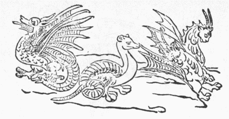
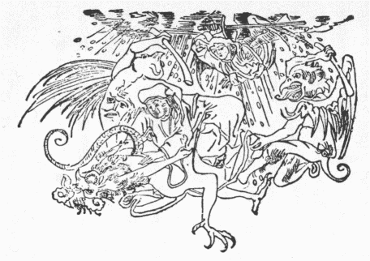
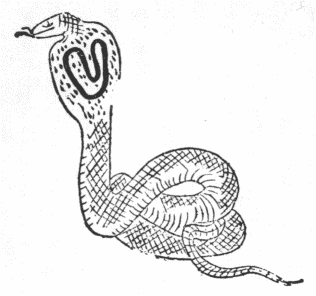
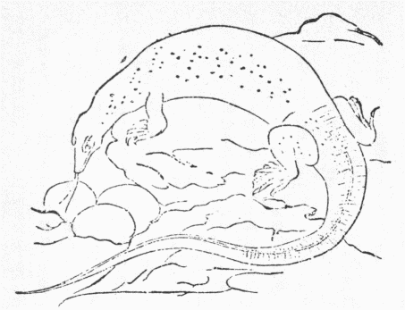
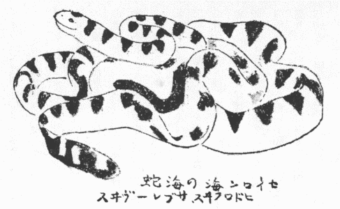
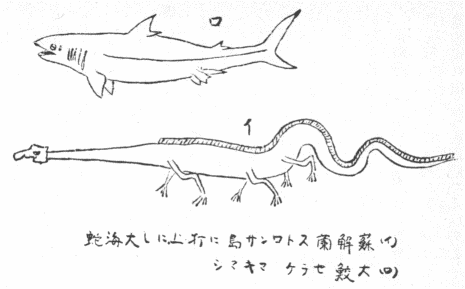
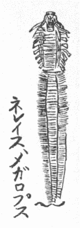

この話は予の知るところでは、『太平記』十五巻に出たのが最も古い完全な物らしい、
馬琴の『
昔語質屋庫』二に、ある書にいわくと冒頭して引いた文も多分それから抄出したと見える。その『太平記』の文は次のごとし。いわく、
（延元元年正月、官軍
三井寺攻めに）
前々炎上の時は、寺門の衆徒、これを一大事にして隠しける
九乳の
鳧鐘も、取る人なければ、空しく焼けて地に落ちたり、この鐘と申すは、昔竜宮城より伝はりたる鐘なり、その故は承平の頃俵藤太
秀郷といふ者ありけり、ある時この秀郷、たゞ一人
勢多の橋を渡りけるに、
長二十丈ばかりなる大蛇、橋の上に横たはつて伏したり、両の眼は輝いて、天に二つの日を掛けたるがごとし、
双べる
角の
尖にして、冬枯れの森の
梢に異ならず、
鉄の牙上下に
生ひ
差ふて、紅の舌
炎を吐くかと怪しまる、もし
尋常の人これを見ば、目もくれ魂消えて、すなはち地にも倒れつべし、されども秀郷、天下第一の大剛の者なりければ、更に一念も動ぜずして、
彼大蛇の
背の上を、荒らかに踏みて、
閑に上をぞ越えたりける、しかれども大蛇もあへて驚かず、秀郷も後を顧みずして、
遥かに行き隔たりける処に、怪しげなる小男一人、
忽然として秀郷が前に
来ていひけるは、我この橋の下に住む事すでに二千余年なり、貴賤往来の人を量り見るに、今
御辺ほどに剛なる人いまだ見ず、我に
年来地を争ふ敵あつて、
動もすれば彼がために悩まさる、しかるべくは御辺、我敵を討つてたび候へと
懇に
語ひけれ、秀郷一義もいはず、子細あるまじと領状して、すなはちこの男を
前に立て、また勢多の方へぞ帰りける、二人共に湖水の波を分けて水中に入る事五十余町あつて、一の楼門あり、開いて内へ入るに、
瑠璃の
沙厚く、玉の
甃暖かにして、落花自ずから
繽紛たり、朱楼紫殿玉の欄干
金を
鐺にし
銀を柱とせり、その壮観奇麗いまだかつて目にも見ず、耳にも聞かざりしところなり。
この怪しげなりつる男、まづ内へ入つて、
須臾の間に衣冠を正しくして、秀郷を客位に
請ず、左右
侍衛官前後花の
粧ひ、善尽し美尽せり、酒宴数刻に及んで、夜既に
深ければ、敵の寄すべきほどになりぬと
周章騒ぐ、秀郷は、一生涯が間身を放たで持ちたりける、五人
張にせき
弦懸けて
噛ひ
湿し、三年竹の
節近なるを、十五束
二伏に
拵へて、
鏃の
中子を
筈本まで打ち通しにしたる矢、たゞ三筋を
手挟みて、今や／＼とぞ待ちたりける、夜半過ぐるほどに、雨風一通り過ぎて、電火の激する事
隙なし、
暫くあつて
比良の
高峯の方より、
焼松二、三千がほど二行に燃えて、中に島のごとくなる物、この竜宮城を
指してぞ近づきける、事の
体を
能々見るに、二行に
点せる焼松は、皆
己が左右の手に点したりと見えたり、あはれこれは、
百足蛇の化けたるよと心得て、
矢比近くなりければ、
件の五人張に十五束
三伏、忘るゝばかり引きしぼりて、
眉間の真中をぞ射たりける、その手答へ鉄を射るやうに聞えて、筈を返してぞ立たざりける、秀郷一の矢を射損じて安からず思ひければ、二の矢を
番うて、一分も
違へず、わざと前の
矢所をぞ射たりける、この矢もまた、前のごとくに躍り返りて、これも身に立たざりけり、秀郷二つの矢をば、皆射損じつ、
憑むところは矢一筋なり、
如何せんと思ひけるが、
屹と案じ出だしたる事あつて、この度射んとしける矢先に、唾を吐き懸けて、また同じ矢所をぞ射たりける、この矢に毒を塗りたる故にや依りけん、また同じ矢坪を、三度まで射たる故にや依りけん、この矢眉間の
只中を
徹りて、喉の下まで、
羽ぶくら責めてぞ立ちたりける、二、三千見えつる焼松も、光たちまち消えて、島のごとくにありつる物、倒るゝ音大地を響かせり、立ち寄りてこれを見るに、果して百足の
※［＃「虫＋玄」、U+86BF、124-12］なり、竜神はこれを悦びて、秀郷を様々に
饗しけるに、太刀
一振、
巻絹一つ、鎧一領、頸
結うたる俵一つ、
赤銅の
撞鐘一口を与へて、御辺の
門葉に、必ず将軍になる人多かるべしとぞ示しける。
秀郷都に帰つて、後この絹を切つて使ふに更に尽くる事なし、俵は中なる
納物を、取れども／＼尽きざりける間、財宝倉に満ちて、衣裳身に余れり、故にその名を、俵藤太とはいひけるなり、これは産業の
財なればとて、これを
倉廩に収む、鐘は
梵砌の物なればとて、三井寺へこれを奉る、
文保二年、三井寺炎上の時、この鐘を山門へ取り寄せて、朝夕これを撞きけるに、あへて少しも鳴らざりける間、山法師ども、
悪し、その義ならば鳴るやうに撞けとて、
鐘木を大きに拵へて、二、三十人立ち掛りて、
破れよとぞ撞きたりける、その時この鐘、
海鯨の
吼ゆる声を出して、三井寺へ
往かふとぞ鳴いたりける、山徒いよ／＼これを
悪みて、
無動寺の上よりして、数千丈高き岩の上をば、
転ばかしたりける間、この鐘
微塵に砕けにけり、今は何の用にか立つべきとて、そのわれを取り集めて、本寺へぞ送りける、ある時一尺ばかりなる小蛇来つて、この鐘を尾を以て
扣きたりけるが、一夜の内にまた本の鐘になつて、
疵付ける所
一つもなかりけり云々。
この鐘に似た事、支那にてこれより前に記された。予が明治四十一年六月の『早稲田文学』六二頁に書いた通り、『酉陽雑俎』（
蜈蚣退治を承平元年と見てそれより六十八年前に死んだ唐の段成式著わす）三に、歴城県光政寺の
磬石、
膩光滴るがごとく、
扣けば声百里に及ぶ、北斉の時、都内に移し撃たしむるに声出ず、本寺に帰せば声
故のごとし、士人磬神聖にして、光政寺を
恋うと
語したとある。『続古事談』五に、経信大納言言われけるは、玄象という琵琶は、調べ得ぬ時あり、資通
大弐、この琵琶を
弾くに調べ得ず、その父
済政、今日この琵琶
僻めり、弾くべからざる日だと言うた、経信白川院の御遊に、呂の遊の後律に調べるについに調べ得ず、古人のいう事、誠なるかなと言われたとある。和漢とも貴重な器具は、人同様心も意気地もありとしたのだ。鐘が鳴らぬからとて、大騒ぎして砕いたなど、馬鹿げた
談だが、昔は、東西ともに大人が今の小児ほどな了簡の所為多く、欧州でも中世まで、動物と人と同様の権利も義務もありとし、証人に引き、また刑の宣告もした（『ルヴィユー・シャンチフィク』三輯三巻、ラカッサニュの説）。されば時として、無心の
什器をも、人と対等視した例も
尠からず、一六二八年、仏国ラ・ロシェルに立て籠った新教徒降った時、仏王の将軍、かの徒の寺に懸けあった鐘を下ろし、その罪を浄めるため、
手苛く
笞懲したは良かったが、これを買った旧教徒に、王人をして代金を求めしむると、新教徒が旧教に化した時、その借金を払うに三年の猶予ある、因ってこの鐘も三年待ってくれと言ったとは珍譚じゃ（コラン・ド・プランチー『
遺宝霊像評彙』一八二一―二年版、巻三、二一四頁）。
『太平記』に三井の鐘破れたるを、小蛇来り尾で叩いて本に復したとあるは、竜宮から出た物ゆえ、竜が直しに来た意味か、または鐘の竜頭が神異を現じた意味だろう、名作の物が、真物同然不思議を働く例は、『酉陽雑俎』三に、〈僧一行異術あり、開元中かつて旱す、玄宗雨を祈らしむ、一行いわく、もし一器上竜状あるものを得れば、まさに雨を致すべし、上内庫中において遍ねくこれを視せしむ、皆類せずと言う、数日後、一古鏡の鼻の盤竜を指し、喜びて曰くこれ真竜あり、すなわち持ちて道場に入る、一夕にして雨ふる〉。『近江輿地誌略』十一には、秀郷自分この鐘を鋳て三井に寄附せりとし、この鐘に径五寸ばかりの円き
瑕あり、土俗いわく、この鐘を鋳る時、一女鏡を寄附して鋳物師に与う、しかれども、心
私かに惜しんだので、その鏡の形に瑕生じたと。また『淡海録』曰く、昔
赤染衛門、若衆に化けてこの鐘を見に来り、鐘を
撫ぜた手が取り
著いて離れず、強く引き離すと手の形に鐘取れた
痕なり、また
染殿后ともいうと。『誌略』の著者は、享保頃の人だが、自ら
睹た所を記していわく、この鐘に大なる
※裂［＃「比＋皮」、U+24FCE、127-5］あり、十年ばかりも以前に、その裂目へ扇子入りたり、その後ようやくして、今は
毫毛も入らず、
愈えて※
［＃「比＋皮」、U+24FCE、127-7］裂なし、破鐘を
護る野僧の言わく、小蛇来りて、夜ごとにこの瑕を舐むる故に愈えたりと、また笑うべし、赤銅の性、年経てその瑕愈え合う物なり、竜宮の小蛇、鐘を
舐りて瑕を愈やす妙あらば、如何ぞ瑕付かざるように
謀らざるや、年経て赤銅の破目愈え合うという事、
臣冶工に聞けりと。予今年七十六歳の知人より聞くは、若い時三井寺で
件の鐘を見たるに※
［＃「比＋皮」、U+24FCE、127-11］裂筋あり、往昔弁慶、力試しにこれを
提げて谷へ
擲げ下ろすと二つに裂けた、谷に下り
推し合せ
長刀で
担うて上り、堂辺へ置いたまま現在した、またその鐘の面に
柄附の鐘様の
窪みあり、竜宮の
乙姫が鏡にせんとて、ここを採り去ったという、由来書板行して、寺で売りいたと。
何がな金にせんと目論み、一つの鐘に二つまで瑕の由来を作った
売僧輩の
所行微笑の至りだが、欧州の
耶蘇寺にも、愚昧な善男女を
宛て込んで、何とも沙汰の限りな聖蹟霊宝を、
捏造保在した事無数だ。試みに上に引いたコラン・ド・プランチーの『評彙』から数例を採らんに、ローマにキリストの
臍帯および
陰前皮と、キリストがカタリン女尊者に忍び通うた窓附の一室、またアレキシス尊者登天の
梯あり。去々年独軍に蹂躙されたランスの大寺に、石上に印せるキリストの尻蹟あり、カタンにアガテ女尊者の両乳房、パリ等にキリストの
襁褓、ヴァンドームにキリストの涙、これは仏国革命の際、実検して南京玉と
判った。またローマに、日本聖教将来の開山ハビエロの片腕、ロヨラ尊者の尻、ブロア附近にキリストの父が木を伐る時出した声、カタロンとオーヴァーンは、聖母マリアの経水
拭いた
布切、オーグスブールとトレーヴにベルテレミ尊者の男根、それからグズール女尊者の体はブルッセルに、女根と
腿はオーグスブールに鎮坐して、各々随喜恭礼されたなど、こんな
椿事は日本にまたあるかいな。
されば弁慶力試しや、男装した赤染衛門の手印などは、耶蘇坊主の
猥雑極まる詐欺に比べて遥かに罪が軽い、それから『
川角太閤記』四に、文禄元辰二月時分より三井寺の鐘鳴りやみ、妙なる義と天下に取り沙汰の事と見ゆ、これも何か坊主どもの
騙術だろうが、一体この寺の鐘性弱いのか、またさなくとも、
度々の兵火でしばしば
※裂［＃「比＋皮」、U+24FCE、128-12］たのを、その都度よい加減に繕うたが、ついに鳴りやんだので、その※
［＃「比＋皮」、U+24FCE、128-13］裂や欠瑕を幸い、種々伝説を造って凡衆を
誑かしたのだろう、かようの次第で三井の鐘が大当りと来たので、これに
倣うて他にも類似の伝説附の鐘が出て来たは、あたかも江戸にも
播州にも和歌山にも皿屋敷があったり、真言宗が拡まった国には必ず弘法大師
三鈷の松類似の話があったり（高野のほかに、『会津風土記』に載った、磐梯山恵日寺の弘法の三鈷松、『江海風帆草』に見ゆる筑前立花山伝教の
独鈷松、チベットにもラッサの北十里、〈色拉寺中一
降魔杵を置く、番民呼んで
多爾済と
為す、大西天より飛来し、その寺
堪布これを
珍づ、番人必ず歳に一朝観す〉と『衛蔵図識』に
出づ）、殊に笑うべきは、天主教のアキレスとネレウス二尊者の
頭顱各五箇ずつ保存恭拝され、欧州諸寺に
聖母の
乳汁、まるで聖母は乳牛だったかと思わるるほど行き渡って奉祀され居るがごとし。
すなわち『近江輿地誌略』六一、
蒲生郡川守村鐘が嶽の竜王寺の縁起を引きたるに、
宝亀八年の頃、この村に小野時兼なる美男あり、ある日一人の美女たちまち来り、夫婦たる事三年ののち女いわく、われは平木の沢の主なり、前世の宿因に依ってこの
諧らいを
為せり、これを形見にせよとて、玉の箱を残して去った、時兼恋情に堪えず、平木の沢に行って歎くと、かの女
長十丈ばかりの大蛇と現わる、時兼驚き還ってかの箱を開き見るに鐘あり、すなわち当寺に寄進す、かの沢より竜燈今に上るなり、霊験新たなるに依って、一条院勅額を竜寿鐘殿と下し賜わり、雪野寺を竜王寺と改めしむ、
承暦二年十月下旬、山徒これを
叡山へ持ち行き撞けども鳴らねば、怒りて谷へ抛げ落す、鐘破れ
瑕つけり、ある人当寺へ送るに、瑕自然愈合、その痕今にあり、年
旱すれば土民雨をこの鐘に祈るに必ず験あり、文明六年九月濃州の石丸丹波守、この鐘を奪いに来たが
俄に雷電して取り得ず、鐘を釣った目釘を抜きけれど人知れず、二年余釣ってあったとあるは、
回祖の鉄棺が中空に懸る
てふ欧州の俗談（ギボン『
羅馬帝国衰亡史』五十章註）に似たり。
竜燈の事は、昨年九、十、十一月の『郷土研究』に詳論し置いた。高木君の『日本伝説集』一六八頁には、
件の女が竜と現じ、夫婦の縁尽きたれば、
記念と思召せとて、堅く結んだ箱を男に渡し、百日内に開くべからずと教えて黒雲に乗って去った。男百日
俟たず、九十九日めに開き見るに、紫雲立ち上って雲中より鐘が現われたとあるは、どうも浦島と深草少将を取り
交ぜたような
拙い作だ。また平木の沢には鐘二つ沈みいたが、一つだけ上がった方は水鏡のように澄み、一つ今も沈みいる方は白く濁る、上がった方の鐘は女人を嫌いまた竜頭を現わさず、常に白綿を包み置く、三百年前一向宗の僧兵が陣鐘にして、敗北の節谷に落し破ったが、毎晩白衣の女現われ、その
破目を舐めたとあるから、定めて舐めて
愈したのだろ、これらでこの竜王寺の
譚は、全く後世三井寺の鐘の盛名を羨んで捏造された物と判りもすれば、手箱から鐘が出て水に沈むとか、女を忌む鐘の瑕を女が舐めて愈したなど、すこぶる辻褄合わぬ拙作と知れる。
『太平記』に、竜神が秀郷に、太刀、巻絹、鎧、俵、鐘、五品を与えたとあれど（『
塵添 嚢抄
嚢抄』十九には
如意、俵、絹、鎧、剣、鐘等とあり、鎧は
阪東の
小山、剣は伊勢の赤堀に伝うと）、巌谷君が、『東洋口碑大全』に引いた『神社考』には、太刀のほかの四品、『和漢三才図会』には太刀、鎧、旗、幕、巻絹、鍋、俵、庖刀、鐘と
心得童子、計九品と一人、太刀の名
遅来矢と
出づ。寛永十年頃筆せられた『氏郷記』巻上にも、如上の十種を挙げた。鍋を早小鍋、俵を首結俵とし居る。また一伝に、露という
硯も将来したが竹生島へ納むとあり、太刀は勢州赤堀の家にあり、
避来矢の鎧は
下野国佐野の家にあり、童は思う事を
叶えて久しく仕えしが、後に
強う怒られて
失せしとかや、巻絹は
裁ち縫うて衣裳にすれども
耗らず、衣服に
充満けるが、後にその末を見ければ延びざりけり、鍋は兵糧を
焼くに、少しの間に煮えしとなり。これも後には底抜けて、その
破片は蒲生家にありとぞ聞えし、俵は米を取れども耗らず、
粮も乏しき事なし、それ故に名字を改め、俵藤太とぞ申しける。されども、
将門退治の後、ある女房俵の底を叩いて米を
開ければ、一尺ばかりの小蛇出で去りしより、米出でざりけり、これより始まりて、今俵の底を叩かぬ
謂れとなり、また秀郷の末孫、陣中にて女房を召し仕わざるも、この謂れとかや云々。秀郷を神と崇めて勢多に社あり（『近江輿地誌略』に、勢多橋南に秀郷社竜王社と並びあり、竜王社は世俗乙姫の霊を祭るという、傍なる竜光山雲住寺縁起に、秀郷水府に至りて竜女と夫婦の約あり、後ここに祭ると）、されば秀郷の子孫、勢多橋を過ぐるには、下馬して笠を脱ぎ、
鈎匙、小刀、
鞭、扇等、何にても水中へ投げ入れ、礼拝して通るに必ず雨ふるなり云々、また曰く、下野国佐野の家にも秀郷より伝えし鎧あり、札に平石権現と彫り付け
牡蠣の殻も付きたり、かの家にては「おひらいし」の鎧とて答拝せらるとなり、またかの鎧竜宮より持ちて上りし男、竜二郎、竜八とて二人あり、これも佐野家に仕えけるが、竜二郎は断絶す、竜八は今において佐野の秋山という処にこれあり、彼らが子孫は必ず身に鱗ありとなり、
避来矢の鎧と書き、平石にてはなしと、以上『氏郷記』の文だ。
『近江輿地誌略』に、ある説に
鐺は、蒲生忠知の室は
内藤帯刀女なり、故に蒲生家断絶後内藤家に伝う、太刀は佐野の余流赤堀家に伝う（蒲生佐野ともに秀郷の
後胤だ）。この宝物を負い出でたる童を、如意と名づく、その子孫を竜次郎とて、佐野の家にあり、
後宮崎氏と称すると
出づ、何に致せ蒲生氏
強盛の大名となりてより、勢多の秀郷社も盛んに崇拝され、種々の宝物も新造されて、秀郷当身の物と唱えられたらしい。『誌略』に雲住寺縁起に載った、秀郷の鏃を見んと、洛西妙心寺に往って見ると、鏃甚だ大にしてまた長く、常人の射るべき物ならず、
打根のごとし、打根は射る物でなく手に掛けて人に打ち付くる物なり、尚宗とある銘の彫刻および
中真の体、秀郷時代より甚だ新しいようだから、臣寺僧に問うに、この鏃は中世蒲生家よりの贈品で、秀郷の鏃という伝説もなし、ただ参詣人、推して秀郷の鏃と称えるのですと
対えたとある。
『
明良洪範』二四には、天正十七年四月、秀吉初め男子（名は棄君）を生む、氏郷累代の重器たる、秀郷
蜈蚣射たる矢の根一本
献る、この子三歳で早世したので、葬処妙心寺へかの鏃を納めたとあるから見ると、氏郷重代の宝だったらしい。
さて秀郷を俵藤太という事、この人初め下野の田原てふ地に住み（あるいはいう大和の田原で生まる、またいう近江の田原を領せり）、藤原氏の太郎だった故、田原藤太といいしを、借字して俵と書くようになって、俵の字を解かんとて竜宮入りの譚を誰かが作り出したであろうと、
馬琴が説いたは、まずは
正鵠を得たものだろう。それから『和漢三才図会』に〈
按ずるに秀郷の勇、人皆識るところなり、三上山蜈蚣あるべし、湖中竜住むべし、
而して十種宝物我が国中世用の器財なり、知らず海底またこれを用うるか、ただ恨むらくはその米俵巻絹世に存せざるなり〉という事は、『質屋庫』に引いた『五雑俎』四に、〈蘇州東海に入って五、六日ほど、小島あり、
濶さ百里余、四面海水皆濁るに、独りこの水清し、風なくして浪高きこと数丈、常に水上紅光
見われ日のごとし、舟人あえて近づかず、いわくこれ竜王宮なり、而して西北塞外人跡到らざるの処、不時数千人樹を□木を

くの声を聞く、明くるに及んで遠く視るに山木一空、いわく海竜王宮を造るなり、余
謂えらく竜水を以て居と為す、
豈また宮あらん、たといこれあるもまたまさに鮫宇貝闕なるべし、必ずしも
人間の木殖を
藉らざるなり、愚俗不経一にここに至る〉とあるより翻案したのだろう。さて『和漢三才図会』の著者が、〈けだし竜宮竜女等の事、仏経および神書往々これを言う、更に論ずるに足らず〉と結んで居るが、一概に論ずるに足らずと斥けては学問にならぬ、
仍ってこれから、秀郷の竜宮入りの譚の類話と、系統を調査せんに、まず
瑣末な諸点から始めるとしよう。
『氏郷記』に、
少時間で早く物を煮得る鍋を、宝物に数えたり、秀郷の子孫に限り、陣中女房を召し仕わざる由を特書したので、
件の竜宮入りの譚は、早鍋世に極めて
罕に、また中古の欧州諸邦と等しく、わが邦でも、軍旅に婦女を伴れ行く風が存した時代に出来たと知らる。今も所により、
米升を洗うを忌むごとく、何かの訳で俵の底を叩くを忌んだのに附会して、ある女房俵の底叩いて蛇を出したと言い出したのであろう。外国にも、米と竜と関係ある話がある。これは蛇が鼠を
啖うて、庫を守るより出た事か、今も日本に米倉中の蛇を、宇賀神など唱え、殺すを忌む者多し。
『外国事』にいう、
毘呵羅寺に神竜ありて、倉中に往来す、奴米を取る時、竜
却後む、奴もし長く取れば竜与えず、倉中米尽くれば、奴竜に向い拝すると、倉
即盈溢る（『淵鑑類函』四三七）。『高僧伝』三に、〈
迦施国白耳竜あり、
毎に衆僧と約し、国内豊熟せしむ、皆信効あり、沙門ために竜舎を起す、並びに福食を設け、毎に
夏坐の
訖るに至り、竜すなわち化して一少蛇と
作る、両耳ことごとく白し、衆
咸これ竜と
識る、
銅盂を以て酪を盛る、竜を中に置き、上座より下に至りてこれを行くこと遍し、すなわち化し去る、年すなわち一たび出づ、法顕また親しく見る〉。
ある蛇どもが乳を嗜む事は、一九〇七年版、フレザーの『アドニス篇』に載せて、蛇を人間の祖先と見立てた蛮人が、祖先再生までの間これを
嬰児同様に乳育するに及んだのだろうとあるを、予実例を挙げて、蛇が乳を嗜むもの多きより、これを崇拝する者乳を与うるのだと
駁し置いた（一九〇九年『ノーツ・エンド・キーリス』十輯十一巻、一五七―八頁）。蛇また竜が豊作に縁ありてふ事は、フレザーのかの書五九頁、一九一一年版『エンサイクロペジア・ブリタニカ』二十四、蛇崇拝の条等に見ゆ。ここに面白きは、ハクストハウセンの『トランスカウカシア』に載せた伝説「米の発見」てふ
奴だ、いわくアブラハムの子シャー・イスマエル既に全世界を従え、大洋を囲んで無数の軍兵に、毎人一桶ずつ毎日その水を
汲ませ、以て大海を
乾し
涸らそうと懸った、かくて追々海が減る様子を、海の民が海王に告げると、王彼らに「敵軍水を汲むに急ぎおるか、
徐々行りおるか見て来い、急いで行りおるなら、彼らはほどなくへこ
垂れるはずだ、徐々
行っておるなら、われら降参して年貢を払わにゃならぬ」と言った。これ誠に名言で、内典にも大施太子、如意宝珠を竜宮に得、海を渡って
少眠む内、諸竜にその珠を盗まれしが、眼覚めて、珠を
復さずばついに空しく帰らじと決心し、一の亀甲を
捉って海水を汲み
涸さんとした。海神問うらく、海水深庭三百三十六万里、世界中の民ことごとく来て汲んだって減らぬに
限った物を、汝一身何ぞ能く汲み尽くし得べきと。太子
対えて、〈もし人至心にして所作事あるを欲せば、弁ぜざるなし、我この宝を得まさに用いて一切群生を饒益し、この功徳を以て用いて仏道を求むべし、わが心
懈らず、何を以て能わざる〉と言ったので、海神その精進強力所作に感じ、珠を還し、その根性強さでは、汝必ず後身
成道すべき間、その時必ず我を弟子にしてくれと頼んだ、大施太子は今の釈迦で、海神は離越これなりとある（『賢愚因縁経』八）。
さて、海王が
視に遣った民が還って、陸王は海を汲むに決して急がず、毎卒日に一桶ずつ汲むと告げたので、海王しからば降参と決し、使をシャーに遣わした。その使の言語一向分らぬから、シャーこれを牢舎し、一婦をその妻として同棲せしめると子が出来た、その子七歳になり、海陸両世界の語を能くすから、これを通弁として、海王の使がシャーの前に出で、海王降参の
表示として、何を陸王に
献るべきやと問うと、百ガルヴァルだけ
糧食を
上れと答う。使これを海王に報ずると、大いに困って、われは大海所有一切の宝を献るべきも、百ガルヴァルてふ莫大の食料は持たぬといった。百ガルヴァルは、日本の二四一九貫二〇〇匁で、大した量でないがこの話成った頃の
韃靼では、莫大な物だったのだ。そこでシャー、しからば五十ガルヴァルはと問うと、海王それも出来ぬから、自分の后と
諸公主を
進そうと答えた。このシャー女嫌いと見え、しからば二十五ガルヴァルはというと、それだけなら何とか
拵えて見ますと言って献った、その海王の
粮というは稲で、もとより水に生じ、陸に生きなんだが、この時より内地諸湖の際に植えられたとある。
秀郷が、竜宮から得た巻絹や俵米は尽きなんだが、一朝
麁忽な扱いしてから出やんだちゅう談に似た事も、諸邦に多い。『五雑俎』十二に、〈巴東寺僧青磁碗を得て、米をその中に投ず、一夕にして満盆皆米なり、投ずるに金銀を以て皆
然り、これを
聚宝
という、国朝沈万三富天下に甲たり、人言うその家にかの宝盆ありと〉、これは少し入れると一盃に殖えるので、無尽の米絹とやや趣きが
差う。欧州には、金を取れども尽きぬ袋の話多く、例せば一八八五年版クレーンの『
伊太利俗談』に三条を出す。『近江輿地誌略』三九、秀郷竜宮将来の十宝の内に、砂金袋とあるもこの
属だろう。古ギリシアのゼウス神幼時乳育されたアマルティアてふ山羊の角を折ってメリッセウスの娘どもに
遺り、望みの品は何でもその角中に満つべき力を
賦けた（スミス『
希臘羅馬人伝神誌名彙』巻一）。
仏説に
摩竭陀国の長者、美麗な男児を生むと同日に、蔵中
自ずから金象を生じ、出入にこの児を離れず、大小便ただ
好く金を出す、阿闍世王これを奪わんとて王宮に召し、
件の男名は象護を出だし、象を留むるにたちまち地に没せり、門外に踊り出で、彼を乗せて還った、彼害を怖れ仏に詣り出家すると、象また随い行き、諸僧騒動す、仏象護に教え象に向い、我
今生分尽きたれば汝を用いずと言わしむると、象すなわち地中に入ってしまった、仏いわく昔
迦葉仏の時、象護の前身
一塔中菩薩が乗った象の像少しく
剥げたるを補うた功徳で、今生金の大小便ばかり垂れ散らす象を得たとあるが、どんな屁を
放ったか説いていない（『賢愚因縁経』十二）。
『今昔物語』六に、
天竺の戒日王、玄奘三蔵に帰依して、種々の財を与うる中に一の鍋あり、入りたる物取るといえども尽きず、またその入る物食う人病なしと見えるが、芳賀博士の参攷本に類話も出処も見えず、予も『西域記』その他にかかる伝あるを知らぬ、当時支那から入った俗説じゃろう。ヒンズー教の『
譚流朝海』に、一樵夫夜叉輩より瓶を得、これを持てばどんな飲食も望みのまま出来るが、
破れればたちまち消え失せるはずだ、やや久しく独りで楽しんでいたが、ある夜友人を会し宴遊するに、例の瓶から何でも
出で来る嬉しさに堪えず、かの瓶を自分の肩に載せて踊ると、瓶落ち破れて、夜叉のもとへ帰り、樵夫以前より一層侘しく暮したと
出づ。アイスランドの伝説に、何でも出す
磨を試すとて塩を出せと望み挽くと、出すは出すは、磨動きやまず、塩乗船に
充ち
溢れて、ついにその人を沈めたとあり。『酉陽雑俎』に、新羅国の
旁※［＃「施のつくり」、U+340C、138-7］ちゅう人、山中で怪小児群が持てる
金椎子が何でも打ち出すを見、盗み帰り、
所欲撃つに随って弁じ、大富となった、しかるにその子孫戯れに狼の糞を打ち出せと求めた故、たちまち雷震して椎子を失うたと見ゆるなど、いずれも俵の底を叩いて、米が出やんだと同じく、心なき
器什も侮らるると
瞋るてふ訓戒じゃ。
それから、竜神が秀郷に送った無尽蔵の巻絹の
因みに、やや似た事を記そう。ハクストハウセン（上に引いた書）がペルシアの俗談と書いたは、支那の伏羲
流寓て、ある富んだ婦人に宿を求めると、
卑蔑で断わられた。次に貧婦の
小舎を
敲くと、歓び入れてあるたけの
飲食を施し、藁の床に臥さしめ、己は土上に坐し終夜眠らず、襦袢を作って与え、朝食せしめて村外れまで送った。伏羲嬉しさの余り、その婦に汝が朝手初めに懸った業は、

まで続くべしと祝うて去った。貧婦帰ってまず布を
度し始めると、夕まで布尽きず、跡から跡から出続いたので、たちまち大富となった。夜前伏羲を断わった隣の富家の婦聞いて大いに
羨むと、数月の後伏羲また村へ来た、かの婦
強いて自宅へ迎え取り食を供し、夜中自室へ蝋燭
点し通夜仕事すると見せ掛け、翌朝
予て拵え置いた襦袢を呈し、食を供えて送り出すと、伏羲前度のごとく祝した。悦んで帰宅の途中、布を
度す事のみ念じて宅へ入る
刹那、自家の飼牛が
吼える、水を欲しいと見える、布を量る前に水を遣らんと水を汲んで桶から
槽に移すに、幾時経っても、桶一つの水が尽きず、夥しく出続き家も畠も沈み、牛畜溺死し、村民大いに怒り、かの婦わずかに身を以て
免れたとある。
一六一〇年頃出たベロアル・ド・ヴェルヴィルの『
上達方』三九章にも似た話あって
遥と面白い。いわくマルサスのバラセ町へ貧僧来り、富家に宿を求めると、主婦無情で亭主
慳貪の由言って謝絶した。次に貧家へ頼むと、女房至誠懇待到らざるなかったので、翌朝厚く礼を述べ、宿銭持たぬは残念と言うと、金が欲しさに留めたでないと言う、因って神に祈って、汝が朝し始めた事は何でも晩まで続くべしと祝して去った、女房一向気に留めず、昨日拡げ置いた布を巻き掛けると、巻いても巻いても巻き尽きず、手が
触るごとに殖えて往く、ところへかの僧を門前払いにした婦やって来て、仔細を聞き、追い尋ねてやっとかの僧を見附け、わが夫の性がころりと改まったから、今夜
情願拙宅へと勧めると、
勤行が済み次第参ろうとあって、やがてついて一泊し、明朝出立に臨み前夜通りの挨拶の後、僧また汝が朝始めた業は
昏まで続くべしと言って去った。待ってましたと、
大忙ぎで下女に布を持ち来らしめ、
度に掛かろうとすると、不思議や小便たちまち催して、忍ぶべうもあらず、これは
堪らぬ布が
沾ると、庭へ飛び下りて身を
屈むる、この時遅くかの時早く、
行尿の流れは臭くして、しかも尋常の水にあらず、
淀みに浮ぶ
泡沫は、かつ消えかつ結びて、
暫時も
停まる事なし、かの「
五月雨に年中の雨降り尽くし」と
吟んだ通り、大声

々
驟雨の井を
倒にするごとく、小声切々
時雨の落葉を打つがごとく、とうとう一の小河を成して現存すとは、
天晴な吹きぶりじゃ。
『氏郷記』に、竜宮から来た竜二郎、竜八の二子孫必ず身に鱗ありとは、
垢が溜り過ぎたのかという人もあらんが、わが邦の緒方の三郎（『平家物語』）、河野道清（『予章記』）、それから松村武雄氏の祖（『郷土研究』二巻一号、二四頁）など、いずれも大蛇が婦人に生ませた子で、蛇鱗を
具えいたと伝え、支那隋の高祖も竜の私生児でもあった者か、〈
為人竜顔にして、額上五柱八項あり、生まれて異あり、宅旁の寺の一尼抱き帰り自らこれを
鞠う、一日尼出で、その母付き自ら抱く、角出で鱗
起ち、母大いに驚きこれを地に墜す、尼心大いに動く、
亟ぎ還りこれを見て曰く、わが児を驚かし、天下を得るを
晩からしむるを致す〉。『続群書類従』に収めた「稲荷鎮座由来」には、荷田氏の祖は竜頭太とて、和銅年中より百年に及ぶまで稲荷
山麓に住み、耕田採薪した山神で、面竜のごとく、顔光ありて夜を照らす事昼に似たり、弘法大師に約して長くこの地を守る、大師その顔を写して、当社の竈戸殿に安置すと見ゆ。既に竜顔といえば鱗もあったるべく、秀郷に従うた竜二郎竜八は、この竜頭太に
傚うて造り出されたものか、一八八三年版、ムラの『
柬埔寨王国誌』二に、昔仏
阿難を従え、一島に至り、トラクオト（両舌ある
大蜥蜴）の棲める大樹下に、
帝釈以下天竜八部を
聚めて説法せし時、
余食をトラクオトに与え、この蜥蜴はわが説法を聴いた功徳により、来世必ず一国の王とならん、しかしその国の人民、皆王の前身舌二枚ある蜥蜴たりし
業報にかぶれ、いずれも不信実で、二枚舌使う者たるべしといったが、この予言通り、カンボジア人は不正直じゃと
出づ。これは竜の子孫に鱗の遺伝どころか、両舌竜の後身に治めらるる国民全体までも、両舌の心性を伝染したのだ。『大摩里支菩薩経』に、〈

酥枳竜口より二舌
出づ、身弦線のごとし〉とあるのは、トラクオトなどより転出した物か、アリゾナのモキス人、カシュミルの竜種人など、竜蛇の子孫という民族所々にある、これらも昔は鱗あるといったのだろう。
それから『氏郷記』に、
心得童子主人の思う事を
叶えて久しく仕えしが、後に
強う怒られて
失せしとかやとあるは、『近江輿地誌略』に、竜宮から十種の宝を負い出でたる童を
如意と名づけ、竜次郎の祖先だとあると同人で、如意すなわち主人の意のごとく万事用を達すから心得童子と
釈いたのであろう。『今昔物語』に、支那の聖人
宮迦羅、使者をして王后を負い来らしめ、犯して
妊ませた話あり。唐の金剛菩提三蔵訳『不動使者陀羅尼秘密法』に、不動使者を
念誦して駆使せば、手を洗い
楊枝を取るほどの些事より、天に上り山に入るまで、即刻成就せしむ、天女を
将ち来らしむるもたちまち得、何ぞいわんや人間界の人や物や飲食をやとあり。『部多大教王経』には、真言で
部多女を招き妹となし、千
由旬内に所要の女人を即刻取り来らしむる法あり。『大宝広博秘密陀羅尼経』には、随心陀羅尼を五万遍誦せば、※
［＃「女＋綵のつくり」、U+5A47、142-3］女王后を鈎召し得とあり。『不空羂索陀羅尼経』に、
緊羯羅童子を使うて、世間の新聞一切報告せしむる方を載せ、この童子用なき日は、一百金銭を持ち来り、持呪者に与う、しかしその銭は仏法僧のために
用い
却し、決して
吝んじゃいけないとは、例の坊主勝手な言で、果してさようなら、持呪者は
只働きで余り
贏利にならぬ、この緊羯羅は瞋面怒目赤黄色狗牙上に出で、舌を吐いて唇を舐め、赤衣を着たという人相書で、これに反し
制 迦
迦は、笑面黄白色の身相、人意を悦ばしむと見ゆ。この者も持呪者のために一切の
要物を持ち来り、不快な物を
除け去り、
宅舎を将ち来り
掃灑し、毒害も及ぶ能わざらしめるなど至極重宝だが、持呪者食時ごとに、まず飲食をこれに与え、また花香
花鬘等を一日欠かさず供えずば、隠れ去って用を
為さぬとある。
『不動使者陀羅尼秘密法』に、〈不動使者小童子形を
作す、両種あり、一は
矜禍羅と名づく（すなわち
宮迦羅）、恭敬小心の者なり、一は制

迦と名づく、共に語らい難く、悪性の者なり、なお人間悪性の下にありて、駆使を受くといえども、常に過失多きがごときなり〉。『
亜喇伯夜譚』に名高いアラジンが
晶燈さえ
点せば現れた如意使者、グリンムの童話の廃兵が
喫烟するごとに出て、王女を執り来った使者鬼など、万事主人の命に随うたが、『今昔物語』の宮迦羅同前、余りに苛酷に使えば怒りて応ぜず、また幾度も非行をし過すに、不同意だったと見える。秀郷の心得童子が、主人の子孫に叱られて消え去ったは、全く主人の所望にことごとく応ぜなんだ故で、
矜羯羅よりは
制迦に近い、かかる如意使者は、欧州の
巫蠱（ウィチクラフト）また人類学にいわゆるファミリアール（眷属鬼）の一種で、諸邦眷属鬼については、『エンサイクロペジア・ブリタンニカ』一九一〇年版、六巻八頁に説明あり。
一九一四年版、エントホヴェンの『グジャラット
民俗記』六六頁に、昔インドモヴァイヤの一農、耕すごとに一童男被髪して前に立つを見、ある日その髪を
剪り取ると、彼随い来って復さん事を切願すれど与えず、髪を
小豆納の壺中に
蔵す。爾来彼童僕となって田作す、そのうち主人小豆
蒔くとて、童をして
壺より取り出さしむると、自分の髪を見附け、
最重き小豆一荷持って主人に
詣り、告別し去った、この童はブフット鬼だったという。ブフットすなわち上に引いた
部多かと思うが、字書がなき故ちょっと判らぬ、とにかくこれも如意使者の一種、至って働きのない
奴に相違ない。
これでまず竜宮入り譚の
瑣末な諸点を解いたつもりだ。これより進んでこの譚の大体が解るよう、そもそも竜とは何物ぞという疑問を釈こう。
昔孔子
老
を見て帰り三日
談らず、弟子問うて曰く、
夫子老
を見て何を
規せしか、孔子曰く、われ今ここにおいて竜を見たり、竜は
合うて体を成し散じて章を成す、雲気に乗じて陰陽は養わる、
予口張って
※［＃「口＋脅」、U+55CB、144-4］う能わず、また何ぞ老
を規さんや（『荘子』）。『史記』には、〈孔子
去きて弟子にいいて曰く、鳥はわれその能く飛ぶを知り、魚はわれその能く
游ぐを知り、獣はわれその能く走るを知る。走るものは以て
罔を為すべし、游ぐものは以て
綸を為すべし、飛ぶものは以て

を為すべし。竜に至ってわれ知る能わず、その風雲に乗りて天に上るを。われ今日老子に
見ゆ、それなお竜のごときか〉とある、孔子ほどの聖人さえ竜を知りがたき物としたんだ。されば史書に、〈
太昊景竜の瑞あり、故に竜を以て官に紀す〉、また〈
女
黒竜を殺し以て
冀州を
済う〉、また〈黄帝は土徳にして黄竜
見る〉、また〈夏は木徳にして、青竜郊に生ず〉など、吉凶とも竜の動静を国務上の大事件として特筆しおり、天子の面を竜顔に比し、非凡の人を臥竜と称えたり。漢高祖や文帝や北魏の宣武など、母が竜に感じて帝王を生んだ話も少なからず。かくまで尊ばれた支那の竜はどんな物かというに、『本草綱目』の記載が、
最要を得たようだから引こう。いわく、〈竜形九似あり、頭駝に似る、角鹿に似る、眼鬼に似る、耳牛に似る、項蛇に似る、腹蜃に似る（蜃は蛇に似て大きく、角ありて竜状のごとく紅鬣、腰以下鱗ことごとく逆生す）、鱗鯉に似る、爪鷹に似る、掌虎に似るなり、背八十一鱗あり、九々の陽数を具え、その声銅盤を
戞つがごとし、口旁に鬚髯あり、頷下に明珠あり、喉下に逆鱗あり、頭上に博山あり、尺水と名づく、尺水なければ天に昇る能わず、気を呵して雲を成す、既に能く水と変ず、また能く火と変じ、その竜火湿を得ればすなわち
焔ゆ、水を得ればすなわち
燔く、人火を以てこれを逐えばすなわち
息む、竜は卵生にして思抱す〉（思抱とは卵を生んだ親が、卵ばかり思い詰める力で、卵が隔たった所にありながら
孵り育つ事だ。インドにもかかる説、『
阿毘達磨倶舎論』に
出づ、いわく、〈太海中大衆生あり、岸に登り卵を生み、沙内に埋む、還りて海中に入り、母もし常に卵を思えばすなわち
壊たず、もしそれ失念すれば卵すなわち敗亡す〉、これ古人が日熱や地温が自ずから卵を孵すに気付かず、専ら親の念力で暖めると誤解するに因る）、〈雄上風に鳴き、雌下風に鳴く、風に因りて化す〉（親の念力で暖め、さて雄雌の鳴き声が風に
伴れて卵に達すれば孵るのだ、『類函』四三八に、竜を
画く者の
方へ夫婦の者来り、竜画を
観た後、竜の雌雄
状同じからず、雄は
鬣尖り
鱗密に
上壮く
下殺ぐ、雌は鬣円く鱗薄く尾が腹よりも
壮いといい、画師不服の体を見て、われらすなわち竜だから
聢に見なさいといって、雌雄の竜に
化って去ったと
出づ、同書四三七に、斉の盧潜竜鳴を聞いて不吉とし城を移すとあり、予も鰐鳴を幾度も聞いた）、〈その
交むときはすなわち変じて二小蛇と
為る、竜の性粗猛にして、美玉
空青を
愛づ、喜んで燕肉を嗜む（ローランの『
仏国動物俗談』巻二、三二二頁に、仏国南部で燕が捷く飛び廻るは竜に食わるるを避けてなりと信ぜらるとある）、鉄および
※草［＃「くさかんむり／罔」、U+83F5、146-2］蜈蚣
楝葉五色糸を畏る、故に燕を食うは水を渡るを忌み、雨を祀るには燕を用う、水患を鎮むるには鉄を用う、『説文』に竜春分に天に登り、秋分に淵に入る〉。
支那に劣らずインドまた古来竜を神視し、ある意味においてこれを人以上の霊物としたは、諸経の発端
毎に必ず諸天神とともに、諸竜が仏を守護聴聞する由を記し、仏の大弟子を竜象に比したで知れる。『大方等日蔵経』九に、〈今この世界の諸池水中、
各竜王ありて
停止り守護す、娑伽羅等八竜王のごときは、海中を護り、能く大海をして増減あるなからしむ、
阿奴駄致等四竜王、地中を守護し、一切の河を出だす、流れ注ぎて竭きることなし、
難陀優波難陀二竜王、山中を守護するが故に、諸山の叢林鬱茂す云々、
毘梨沙等、小河水にて守護を為す〉。それから諸薬草や地や火や風や樹や花や果や、一切の
工巧や百般の物を護る諸竜の名を挙げおり、『
大灌頂神呪経』に三十五、『大雲請雨経』に百八十六の竜王を
列べ、『大方等大雲経』には三万八千の竜王仏説法を聴くとあり、『経律異相』四八に、竜に卵生・胎生・湿生・化生の四あり、皆先身
瞋恚心曲り
端大ならずして布施を行せしにより今竜と生まる、七宝を宮となし身高四十里、衣の長さ四十里、広さ八十里、重さ二両半、神力を以て百味の
飲食を化成すれど、最後の一口変じて
蝦蟇と
為る、もし道心を発し仏僧を供養せば、その苦を免れ身を変じて
蛇
と為るも、蝦蟇と
金翅鳥に遭わず、
※［＃「（口＋口）／田／一／黽」、U+9F09、146-16］魚鼈を食い、
洗浴衣服もて身を養う、身相触れて陰陽を成す、寿命一劫あるいはそれ以下なり、
裟竭、難陀等十六竜王のみ金翅鳥に啖われずとある。金翅鳥は竜を常食とする大鳥で、これまた卵胎湿化の四生あり、
迦楼羅鳥王とて、観音の
伴衆中に、
烏天狗様に画かれた者だ。これは欧州やアジア大陸の高山に住む、独語でラムマーガイエル、インド住英人が
金鷲と呼ぶ鳥から誇大に作り出されたらしい、先身高慢心もて、布施した者この鳥に生まる。
『僧護経』にいわく竜も
豪いが、生まるる、死ぬる、婬する、
瞋る、
睡る、
五時に必ず竜身を現じて隠す能わず。また僧護竜宮に至り、四竜に経を教うるに、第一竜は黙って
聴受、第二竜は
瞑目口誦し、第三竜は
廻顧て、第四竜は
遠在て
聴受た、怪しんで竜王に向い、この者ら誠に畜生で作法を弁えぬと言うと、竜王そう
呵りなさんな、全く
師命を護らん心掛けだ、第一竜は声に毒あり、第二竜は眼に毒あり、第三竜は気に、第四竜は
触るに毒あり、いずれも師を殺すを
虞れて、不作法をあえてしたと語った。また竜の三患というは、竜は諸鱗虫の長で、能く幽に能く明に、能く大に能く小に、変化極まりなし、だが第一に熱風熱沙
毎もその身を苦しめ、第二に悪風
暴かに起れば身に飾った宝衣全く失わる、第三には上に述べた金翅鳥に逢うと死を免れぬ、それから四事不可思議とは、世間の衆生いずこより生れ来り、死後いずこへ往くか判らぬ、一切世界衆生の
業力に
由りて成り、成っては
壊れ、壊れては成り、始終相続いて断絶せぬ、それから竜が雨を降らすに、口よりも眼鼻耳よりも出さず、ただ竜に大神力ありて、あるいは喜びあるいは怒れば雨を降らす、この四をいうのじゃ（『大明三蔵法数』十一、十八）。
『正法念処経』にいわく、
瞋痴多行の者、大海中に生まれて毒竜となり、共に瞋悩乱心毒を吐いて相害し、常に悪業を行う。竜が住む城の名は
戯楽、縦横三千
由旬、竜王中に満つ、二種の竜王あり、一は法行といい世界を護る、二は非法行で世間を
壊る、その城中なる法行王の住所は熱砂
雨らず、非法行竜の住所は常に熱沙
雨り、その頂あり、
延いて宮殿と眷属を焼き、全滅すればまた生じて不断苦しみを受く、法行竜王の住所は七宝の城郭七宝の色光あり、諸池水中衆花具足し、最上の
飲食もて常に快楽し、妙衣厳飾
念うところ随意に皆あり、しかれどもその頂上常に竜蛇の頭あるを免れぬとある。今も竜王の像に、必ず竜が頭から背中へ
噛り付いたよう造るは、この本文を
拠としたのだろ。さて竜に生まるるは、必ずしも
瞋痴った者に限らず、
吝嗇な奴も婬乱な人も生まれるので、
吝な奴が転生した竜は相変らず
慳く、
婬なものがなった竜は、依然多淫だ。面倒だが読者が悦ぶだろから、一、二例を挙げよう。
『
大毘盧遮那加持経』に、人の諸心性を諸動物に比べた中に、広大なる資財を思念するを竜心と名づけた。わが邦で熊鷹根生というがごとし。今日もインドで
吝嗇漢嗣子なく、死ねば蛇と
化って遺財を守るという（エントホヴェン輯『グジャラット
民俗記』一一九頁）。すべてインドで財を守る蛇はナガ、すなわち
載帽蛇で、多くの場合に訳経の竜と相通ずる奴だ（後に弁ずるを読まれよ）。『賢愚因縁経』四に、波羅奈国の人苦心して七瓶金を蓄え、土中に埋み
碌に衣食せず病死せしが、毒蛇となってその瓶を
纏い数万歳を経つ、一朝自ら罪重きを悟り、
梵志に托し金を僧に施して、蛇身を
脱れ天に生まれたとあり。『今昔物語』十四なる無空律師万銭を隠して蛇身を受けた話、また聖武天皇が一夜会いたまえる女に
金千両賜いしを、女死に臨み遺言して、墓に埋めしめた妄執で、蛇となって苦を受け、金を守る、ところを
吉備大臣かの霊に逢いて仔細を知り、掘り得た金で追善したので、蛇身から
兜率天へ
鞍替したちゅう話など、かのインド譚から出たよう、芳賀博士の攷証本に見るは尤も千万だ。降って『因果物語』下巻五章に、僧が蛇となって銭を守る事二条あり。『
新著聞集』十四篇には、京の富人溝へ飯を捨つるまでも乞食に施さざりし者、死後蛇となって池に住み、
蓑着たように
蛭に取り付かれ苦しみし話を載す。
婬乱者が竜と
化った物語は、『毘奈耶雑事』と『戒因縁経』に出で、話の本人を妙光女とも善光女とも訳し居るが、概要はこうだ。
室羅伐城の大長者の妻が
姙んだ日、
形貌非常に
光彩あり、産んだ女児がなかなかの美人で、生まるる日室内明照日光のごとく、したがって
嘉声城邑に
遍かった。しかるところ相師あり、衆と同じく往き観て諸人に語る、この女後まさに五百男子と歓愛せんと、衆曰くかかる
尤物は五百人に愛さるるも奇とするに足らずと、
三七日経て長者大歓会を
為し、彼女を妙光と名づけた。ようやく成長して
容華雅麗に、
庠序超備、伎楽管絃備わらざるなく、もとより富家故出来得るだけの綺羅を飾らせたから、鮮明遍照天女の来降せるごとく、いかな隠遁仙人離欲の輩も、これを見ればたちまち雲を踏み外す事受け合いなり、いかにいわんや無始時来
煩悩を貯え来った年少丈夫、
一瞥してすなわち迷惑せざらんと長口上で
讃めて居るから、
素覿無類の美女だったらしい。諸国の大王、太子、大臣等に婚を求めたが、相師の予言を
慮り、彼ら一向承引せず、ただ彼女を門窓
戸
より窺う者のみ多くなり、何とも防ぎようがないので、長者早く娘を嫁せんとすれど求むる者なし。時に城中に一長者ありて、七度妻を
娶りて皆死んだので、衆人
綽号して殺婦と言った。海安寺の唄に「虫も殺さぬあの
主様を、女殺しと誰言うた」とあるは、女の命を己れに打ち込みおわらしむてふ形容詞だが、今この殺婦は正銘の女殺しの大先生たるを怖れ、素女はもちろん寡婦さえ一人も取り合わぬ。相師の一言のおかげで、かかる美容を持ちながら盛りの花を
空に過さしむるを残念がって、請わるるままに父が妙光を殺婦に遣った心の中察するに余りあり。
殺婦長者既に多くの妻を先立てし罪業を
懼れ、新妻を娶ると
直ぐさま
所有鎖鑰を彼女に
附し、わが家の旧法仏僧に帰依すれば、汝も随時僧に給事して、
惰るなかれというた。爾来僧を請ずるごとに、妙光が自手給事するその間、美僧あれば思い込んで
記え置く。ある日長者外出するとて、わが不在中に僧来らば必ず善く接待せよと言って置き、途上数僧に逢うて、われは所用あって失敬するが、家に妻が居る故必ず食を受けたまえというたので、僧その家に入ると、妙光たちまち地金を
露わし、僧の前にその姿態嬌媚の相を
作す。僧輩無事に食い
了って寺に還り、かかる所へ往かぬが好かろうと相戒めて、明日より一僧も来ない。長者用済み還って妻に問うに、主が出で往った日来た限り、一僧も来らずと答う、長者寺に往って問うに、われら
不如法の家に入らぬ定めだと
対う。長者今後は必ず如法に請ずべければ何分前通りと切願して、僧輩も聞き入れ、他日来て食を受く、長者すなわち妙光を一室に
鎖閉め、自ら食を衆僧に授くるその間、妙光室内でかの僧この僧と、その美貌を
臆い出し、極めて
愛染を生じ、欲火に身の内外を焼かれ、遍体汗流れて死んだ。長者僧を供養しおわり、室を開けて見れば右の始末、やむをえず五色の
氈もてその屍を飾り、葬送して林中に到る。
折悪しく五百群賊盗みし来って、ここに営しいたので、送葬人一同逃げ散った。群賊怪しんで捨て去られた屍を開き、妙光女魂既に
亡たりといえども、容儀儼然活けるがごとく、
妍華平生に異ならざるを
覩、
相いいて曰く、この女かくまで美艶にして、遠く
覓むるも等類なしと、各々
染心を生じ、共に非法を行いおわって、礼金として五百金銭を屍の側において去った。
天明に及び、四方に
噂立ち皆いわく、果して相師の言のごとく、妙光女死すといえども、余骸なお五百人に通じ、五百金銭を獲たと。妙光死して天竺の北なる
毘怛吐泉の竜となり、五百牡竜来って共に常にこれに通じた。世尊諸
比丘に向いその因縁を説きたまわく、昔
迦葉仏入滅せるを諸人火葬し、
舎利を収め塔を立てた時、
居士女極めて渇仰して明鏡を塔の相輪中に
繋ぎ、願わくはこの功徳もて後身世々わがある所の
室処光明照耀日光のごとく、身に
随れて出ん事をと念じた。その女の後身が妙光女で、願の趣聞き届けられて、居所室内明照日光のごとくだった。かく
赫耀ながら幾度も
転生る中、梵授王の世に、婆羅尼斯城の婬女に生まれ賢善と名づけ、顔容端正人の見るを
楽ぶ。ところで
予て王の
舅と交通した。ある時五百の
牧牛人芳園で宴会し、何とよほど面白いが、少女の共に交歓すべきを欠くは残念だ、一人呼んで来るが
好い、誰が
宜ろうと言うと、皆賢善女賛成と一決し、呼びに行くと、かの婬女金銭千文くれりゃ行こう、くれずば往かぬというたので、まず五百金銭を与えて歓を得、戯れ済んでまた五百金銭を渡せば
如何といい、婬女承諾して五百銭を受け、汝ら先往きて待ちおれ、我
 飾
飾して後より行こうという。衆去りて後婬女われかく多勢を相手に戯れては命が続かぬ、何とか
脱れようをと案じて、かつて
相識った王舅に
憑みて救済を乞わんと決心し、婢をして告げしめしは、かくかくの次第で、妾
迂闊の難題を承諾したが、何が何でも五百人は一身で引き受けがたい、さりとて破談にせば倍にして金を返さにゃならず、何とか銭も返さず身をも損ぜぬよう計らいくだされたいと頼むと、平常
悪からぬ女のこと故、王の力を仮りて女を出さず五百銭をも戻さずに、五百人を巻いてしまわせた。
爾時辟支仏あって城下に来りしを、かの五百
牧牛人供養発願して、その善根を以てたとい彼女身死するとも残金五百銭を与えて、約のごとく彼と交通せんと
願懸した。その
業力で以来五百生の内、常に五百金銭を与えて、彼女と非法を行うたと仏が説かれた。これで仏の本説は、人の
善き事は善く、
悪しき事は悪しく、箇々報いが来り、決して差し引き帳消してふ事がないと主張するものと判る。すなわち鏡を捧げた功徳で発願通り飛び切りの
別嬪に生まれるが、他の
業報で娼妓に生まるるを免れず、娼妓営業中五百人を欺いた報いで、牧牛人輩の発願そのまま、五百金銭を与えて死骸を汚さるるを免れぬは、大功は小罪を消し一善は一悪を滅すと心得た今日普通の業報説と大いに
差うようで、こんな仏説を呑み込み過ぎると、重悪を犯した者は、小善を治めても及び着かぬてふ
自暴気味を起すかも知れず、今日の小乗仏教徒に、余り大事業大功徳を企つる者なきは多少この理由にも基づくなるべし。
アドルフ・エルトンの『
世界周遊記』（一八三八年版、二巻一三頁）に、シベリアの露人が、新年に試みる指環占の中、竜てふ名号をいう事あるにより、この
占法は蒙古より来れりと断じた。これは蒙古はインドと支那の文物を伝え、この二国が竜の崇拝至って盛んだから、竜てふ名号は蒙古を経て、二国よりシベリアに入ったとの推定であろう。予はこの推定を大略首肯するに躊躇せぬ。しかしかかる物を読んで、竜をアジアの一部にのみ
流われた想像動物と信ずる人あらば、誤解も甚だしく、実は竜に関する信念は、インドや支那とその近傍諸国に限らず、広く他邦他大州にも存したもので、たとえば、ニューギニアのタミ人元服を行う時、その青年必ず一度竜に呑まるるを要し（一九一三年版、フレザー『不死の
信念』一巻三〇一頁）、西北米のワバナキインジアンに、竜角人頭に
著きて根を下ろし、
伐れども離れぬ話広く行われ（『
万国亜米利加学者会報』一九〇六年、クェベック版、九二頁）、西人がメキシコを発見せぬ内、土人が作った貴石のモザイク品に、背深緑、腹真紅、怒眼、鋭牙、すこぶる竜に似たものが大英博物館にあったので、予これは歌川派画工が描いた竜を
擬たのだろと言うと、サー・チャーレス・リードが、
聢り手に執って見よというから、
暫く審査すると、全く東半球に産せぬ
響尾蛇の画の外相だけ東洋の竜に
酷似たと判った。しかるにその後、仏人サミュール・ド・シャムプレーンの『一五九九―一六〇二年西印度および墨西哥』（ナラチヴス・オヴ・ア・ヴォエージ・ツー・ゼ・ウェスト・インジース・エンド・メキシコ、一八五九年英訳）を見るに、メキシコの響尾蛇の頭に両羽あり、またその地に竜を産し、鷲の頭、
蜥蜴の身、
蝙蝠の
翹で、ただ二大脚あり。大きさ羊のごとく、姿怖ろしけれど害を
為さぬとあった。因ってかの国にも、古来蛇、蜥蜴などを誇張して、竜の
属の想像動物を
拵えあったと知った。濠州メルボルン辺に
棲むと伝えた
巨蛇ミンジは、プンジェル神の命のままに、疱瘡と
黒疫もて悪人を殺すに
能く、
最高き樹に登り尾もて懸け下り、身を延ばして大森林を
踰え、どの地をも襲う。また
乾分多く、諸方に遣わして疫病を起す。この蛇来る地の人皆取る物も取らず、死人をも葬らず、
叢榛に放火して、速やかに走り災を脱れた（一八七八年版、スミス『
維多利亜生蕃篇』巻二）といえる事体、蛇よりは欧亜諸邦の毒竜の話に極めて似居る。例せばペルシアの古史賦『シャー・ナメー』に、勇士サムが殺した竜は
頭髪を地に
いて山のごとく起り、両の眼
宛然血の湖のごとく、一たび

ゆれば大地震動し、口より毒を吐く事洪水に似、飛鳥
竭き、奔獣尽き、流水より

を吸い、空中より鷲を落し、世間恐怖もて満たされ、一国のために人口の半ばを
喪うたと吹き立て、衆経撰『
雑譬喩経』に、昔
賈客海上で大竜神に逢う、竜神汝は某国に行くかと問うに、往くと答えると、五升
瓶の大きさの卵一つを与え、かの国に行かば、これを大木の下に埋めよ、しからざれば殺すぞという。恐ろしくてその通り埋めてより国中疫病多し、王占いてかの
蟒卵を掘り出し焼き棄てると疫が
息んだ。後日かの賈客、再び竜に逢って仔細を語ると、
奴輩を殺し尽くさぬは残念というから、その故を問う。我
本かの国の健児某甲だった。平日力を
恃んで国中の人民を
凌轢せしも、一人としてわれを諫むるなく、
為すがままに
放置いたので、死後竜に生まれて苦しみ居る故に、返報に彼らを殺そうとしたのだといった。また、舎衛国に、一日縦横四十里の血の雨ふる。占師曰く、これは
人蟒が生まれた兆だ、国中新生の小児をことごとく送り来さしめ、各々一空壺中に
唾かしむれば、
唾が火となる児がそれだというので試みると、果して一児が人蟒と別った、因ってこれを
無人処に隔離し、死刑の者を与えると、毒を吐いて殺す事前後七万二千人、ある時獅出で来て吼声四十里に達したので人蟒を遣わすに、毒気を吐いてたちまちこれを
仆した。のち人蟒老いて死せんとする時、
仏、
舎利弗して往き勧めて
得脱せしむ。人蟒われいまだ死せざるに、この者われを
易り、取次もなしに入り来ると
瞋って毒気を吐くを、舎利弗慈恵を以て
攘い、光顔ますます
好く、一毛動かず。人蟒すなわち慈心を生じ、七たび舎利弗を顧みて、往生昇天したとある。竜気を
稟けて生まれてだにこんなだ。いわんや竜自身の大毒遥かに人蟒や蟒卵に駕するをやで、例せば、
難陀 波難陀
波難陀二竜王、各八万四千の眷属あり、禍業の招くところ、悩嫉心を以て、毎日三時その毒気を吐くに、二百五十
踰膳那内の鳥獣皆死し、諸僧静かに度を修する者、皮肉変色
憔悴萎れ黄ばんだので、仏
目蓮をして二竜を調伏せしめた（『根本説一切有部毘奈耶』四四）。
かく竜てふ物は、東西南北世界中の大部分に古来その話があるから、東洋すなわち和漢インド地方だけの事識れりとて、竜の譚全体を窺うたといわれぬ、英国のウォルター・アリソン・フィリップ氏の竜の説に、すこぶる広く観て要を約しあるから、多少拙註を加えて左に抄訳せり。ついでに述ぶ、前節に相師が妙光女を見て、この女必ず五百人と交わらんといった話を述べたが、一八九四年版ブートン訳『
亜喇伯夜譚補遺』一にも、アラビアで
一女生まれた時、占婦
卜してこの女成人して、必ず婬を五百人に売らんと言いしが
中った事あり、わが邦にも『水鏡』
恵美押勝討たれた記事に「また心
憂き事
侍りき、その大臣の娘
座しき、
色容愛たく世に
双人なかりき、
鑑真和尚の、この人千人の男に逢ひ給ふ相
座すと
宣はせしを、たゞ打ちあるほどの人にも座せず、一、二人のほどだにも
争でかと思ひしに、父の大臣討ち取られし日、
御方の
軍千人ことごとくにこの人を犯してき」、いずれも妙光女の仏話から生じたらしいと、明治四十一年六月の『早稲田文学』へ書いて置いた。『呉越春秋』か『越絶書』に、
伍子胥越軍を率いて、その生国なる楚に討ち入り、楚王の宮殿を
掠めた時、旧君たりし楚王の妃妾を強辱して、多年の鬱憤を晴らしたとあった。『
将門記』に、
平貞盛と
源扶敗軍してその妻妾
将門の兵に凌辱せられ、恥じて歌詠んだと出づ。強犯されて一首を
吟むも、万国無類の風流かも知れぬが、昔は
何国も軍律
不行届かくのごとく、国史に載らねど、押勝の娘も、多数兵士に汚された事実があったのを、妙光女の五百人に二倍して、千人に云々と作ったのであろう。
フィリップ氏曰く、竜の英仏名ドラゴンは、ギリシアにドラコン、ラテンのドラコより出で、ギリシアのドラコマイ（視る）に
因んで、竜眼の鋭きに取るごとしと。ウェブストルに、竜眼怖ろしきに因った名かとある方、
釈き
勝れりと
惟う。例せば上に引いたペルシアの『シャー・ナメー』に、竜眼を血の湖に比べ、欧州の諸談皆竜眼の恐ろしきを言い、殊に毒竜バシリスクは、蛇や
蟾蜍が、鶏卵を伏せ
孵して生ずる所で、眼に大毒あり能く他の生物を
睨み殺す、古人これを猟った唯一の法は、毎人鏡を手にして向えば、彼の眼力鏡に映りて、その身を返り
射、やにわに
斃死せしむるのだったという（ブラウン『
俗説弁惑』三巻七章、スコッファーン『
科学俚俗学拾葉』三四二頁以下）。シュミットの『
銀河制服史』に、十六世紀に南米に行われた俗信に、
井中にあるを殺す唯一の法は鏡を示すにあり、しかる時彼自分の怖ろしき顔を見て死すとあるは、
件の説の焼き直しだろ。わが邦にも
魔魅、
蝮蛇等と眼を見合せばたちまち気を奪われて死すといい（『塵塚物語』三）、インドにも毒竜視るところことごとく破壊す（『毘奈耶雑事』九）など説かれた。フ氏曰く、竜は仮作動物で、普通に翼ありて火を吐く
蜥蜴また蛇の巨大なものと。まずそうだが、東洋の竜が千差万別なるごとく、西洋の竜も記載一定せぬ、中世英国に行われたサー・デゴレの『武者修行賦』から、その一例を引かんに、ここに大悪竜あり、全身あまねく火と毒となり、喉
濶く牙大にしてこの騎士を撃たんと
前む、両足獅のごとく尾不釣合に長く、首尾の間確かに二十二足生え、
躯酒樽に似て日に映じて
赫耀たり、その眼光りて
浄玻璃かと怪しまれ、鱗硬くして
鍮石を欺く、また馬様の
頸もと頭を
擡ぐるに大力を出す、口
気を吹かば火焔を成し、その
状地獄の兇鬼を見るに異ならず（エリス『
古英国稗史賦品彙』二版、三巻三六六頁）、フ氏続けていわく、ギリシア名ドラコンは、もと大蛇の義神誌に載せ、竜は形容種々なれど実は蛇なり。カルデア、アッシリア、フェニキア、エジプト等、大毒蛇ある諸国皆蛇また竜を悪の標識とせり、例せばエジプト教のアポピは闇冥界の大蛇で、日神ラーに制服され、カルデアの女神チャーマットは、国初混沌の世の陰性を表せるが、七頭七尾の大竜たり。ヘブリウの諸典また蛇あるいは竜を死と罪業の本とて、キリスト教の神誌これを沿襲せり。しかるにギリシア、ローマには一方に蛇を兇物として
蛇髪女鬼、
九頭大蛇等、諸怪を産出せる他の一方に、
竜種を眼
利く地下に住む守護神として崇敬せり。例せば医神アスクレピオスの諸祠の神蛇、デルフィの大蛇、ヘスペリデスの神竜等のごとしと。熊楠バッジ等エジプト学者の書を按ずるに、古エジプト人も古支那と同じく、竜蛇を兇物とばかり見ず善性瑞相ありとした例も多く、神や王者が自分を蛇に比べて、讃頌したのもある。
さてフ氏またいわく、
一汎に言えば竜の悪名は好誉より多く、欧州では悪名ばかり残れり。キリスト教は古宗教の善悪の諸竜を混同して、一斉にこれを邪物とせり、かくて
上世の伝説外相を変えて、ミカエル尊者、ジョージ尊者等、上帝に祈りて竜を誅した譚となり、以前ローマの
大廟に
窟居して
大地神女を
輔け人に益した神蛇も、法王シルヴェストル一世のために
迹を絶つに及べり。北欧の
大蛇も、東方南方の大蛇と性質同じく罪悪の主、隠財の守護にして、人が好物を獲るを遮る。故に中世騎士勇を以て鳴る者竜を殺すをその規模とし、近世と余り隔たらぬ時代まで学者も竜
実に世にありと信ぜり。ただし研究追々進みては、竜も身を人多き地に置き得ず、アルプス山中無人の境をその最後の潜処としたりしを、ジャク・バルメーンその妄を弁じてよりついに竜は全く想像で作られたものと
判れり。これより前一五六四年死せるゲスネルの判断力、当時の学者輩に挺特せしも、なおその著『動物全誌』（ヒストリア・アニマリウス）に竜を載せたるにて、その頃竜の実在の信念深かりしを知るべしと。
フ氏曰く、竜の形状は最初より一定せず、カルジアのチャーマットは躯に鱗ありて四脚両翼を具せるに、エジプトのアポピとギリシア当初の竜は
巨蛇に過ぎず。『新約全書』末篇に見えた竜は多頭を一身に
戴き、シグルドが殺せしものは脚あり。欧州でも支那でも、竜の形状は多く現世全滅せる大蜥蜴類の遺骸を観て言い出したは疑いを
容れず。支那や日本の竜は、空中を行くといえど翼なしと。
熊楠いわく、支那でも、古く黄帝の世に在った応竜は翼あった。また
鄒陽の書に、〈
蛟竜首を
驤げ、翼を奮えばすなわち浮雲出流し、雲霧
咸集まる〉とあれば、漢の世まで、常の竜も往々有翼としたので、『山海経』に、〈泰華山蛇あり肥遺と名づく、六足四翼あり〉など、竜属翼ある記事も若干ある。結局翼なくても飛ぶと讃えてこれを省いたと、蛇や蜥蜴に似ながら飛行自在なる
徴に翼を添えたと趣は異にして、その意は一なりだ。フ氏の言いぶり古エジプトの竜も、単に大蛇にほかならぬようだが、日神の敵アポピは、時に大蛇、時に
たり（バッジ『
埃及諸神譜』一）、その他の大蛇にも、脚や翼を具えたのがある故、蛇よりは
竜夥のものだ。西洋の竜とても、ローマの帝旗として竜口を銀、他の諸部を
彩絹で作り、風を含めば全体
膨れて、
開いた口が
塞がれなかった、その竜に翼なし。さてローマ帝国のプリニウスの『
博物志』に、竜の事を数章書きあるが、翼ある由を少しも述べず、故にフ氏が思うたほど、東西の竜が無翼有翼を特徴として区別判然たるものでない。また『五雑俎』に、竜より霊なるはなし、人得てこれを
豢う。唐訳『
花厳経』七八に、〈人あり竜を
調す法を善くす、諸竜中において、易く自在を得〉、西洋にも昔はそうと見えて、プリニウス八巻二十二章に、ギリシア人トアス幼時竜を
畜い
馴らせしに、その父その長大異常なるを
懼れ沙漠に棄つ、後トアス賊に掩撃された時、かの竜来り救うたとある。フ氏は、インドの竜について一言もしおらぬが、『大雲請雨経』に、大歩、金髪、馬形等の竜王を列し、『大孔雀呪王経』に、〈
諸の竜王あり地上を行き、あるいは水中にあって依止を
作し、あるいはまた常に空裏を行き、あるいはつねに妙高に依って住むあり（妙高は
須弥山の事）、一首竜王を我慈念す、および二頭を以てまたまた然り、かくのごとく
乃至多頭あり（『請雨経』には五頭七頭千頭の竜王あり）云々、あるいはまた諸竜足あるなし、二足四足の諸竜王、あるいは多足竜王身あり〉と見れば、梵土でも支那同様竜に髪あり、数頭多足あるもありとしたのだ。二足竜の事、この『呪王経』のほかにも、沈約の『宋書』曰く、〈
徐羨之云々かつて行きて山中を経るに、黒竜長さ丈余を見る、頭角あり、前両足皆具わり、後足なく尾を
曳きて
行く、後に文帝立ち羨之
竟に凶を以て終る〉などあれど、東洋の例至って少ない。しかるに西洋では、中古竜を記するに多くは二脚とした。第一図はラクロアの『
中世の科学および文学』英訳本に、十四世紀の『世界奇観』てふ写本から転載した竜数種で、第二図は一六〇〇年パリ版、フランシスコ・コルムナのポリフィルスの題号画中の竜と蝮と相討ちの図だが、ことごとく竜を二脚として居る。この相討ちに似た事、一九〇八年版スプールスの『アマゾンおよびアンデス植物採集紀行』二巻一一八頁に、二尺
長の
が同長の蛇を
嚥んだところを、著者が殺し腹を
剖くと、蛇なお
活きいたとあるし、十六世紀にベスベキウス、かつて蛇が
蝦蟆を呑み掛けたところを二足ある奇蛇と誤認したと自筆した（『
土耳其紀行』一七四四年版、一二〇頁）。マレー人は、
の雄は腹の外の皮が
障る故、陸に上れば後二脚のみで歩むと信ず（エップの説、『印度群島および
東亜細亜雑誌』五巻五号）、過去世のイグアノドン、予がハヴァナの郊外で多く見たロケーなど、蜥蜴類は
長尾驢のごとく、尾と後の二脚のみで
跳ね歩き、
跂い行くもの少なからず、
従ってスプールスが南米で見た古土人の
彫画に、四脚の蜥蜴イグアナを二脚に
作たもあった由。

第１図 14世紀写本の竜画
 第２図 1600年版 竜と蝮の咬み合い
第２図 1600年版 竜と蝮の咬み合い
また『蒹葭堂雑録』に、わが邦で獲た二足の蛇の図を出せるも、全くの
嘘蛇ないらしい。ワラス等が言った通り、
や諸蜥蜴が事に臨んで、前二脚のみで走り、またいっそ四脚皆用いず、腹と尾に力を入れて
驀らに急進するが一番
迅い故、専らその方を用いた結果、短い足が
萎靡してますます短くなる代りに、躯が蛇また
蚯蚓のごとく長くなり、カリフォルニアとメキシコの産キロテス属など、短き前脚のみ存し、支那、ビルマ、米国等の
硝子蛇や、濠州地方のピゴプス・リアリス等諸属は前脚なくて、後脚わずかに
両の
小刺、また
両の
小鰭となって痕跡を止め、英仏等の
盲虫、アジアやアフリカの
両頭蛇は、全く足なく眼もちょっと分らぬ。『類函』四四八に、〈黄州に小蛇あり、首尾
相類う、因って両頭蛇という、余これを視てその尾端けだし首に類して非なり、土人いわくこの蛇すなわち老蚯蚓の化けしところ、その大きさ大蚓を過ぎず、行は蛇に類せず、
宛転甚だ鈍し、またこれを山蚓という〉。『燕石雑志』に、日向の大
蚯蚓空中を飛び行くとあるは、これを擬倣したのか。とにかく蜥蜴が地中に棲んで
蚯蚓様に堕落したのだが、諸色
交も横条を成し、すこぶる奇麗なもある。『文字集略』に、

は竜の角なく赤白蒼色なるなりと言った。
わが邦でアマリョウと呼び、
絞紋などに多かる竜を骨抜きにしたように軟弱な怖ろしいところは
微塵もない物は、かかる身長く脚と眼衰え、退化した蜥蜴諸種から作り出されたものと惟う。したがって上述の諸例から推すと、西洋で専ら竜を二足としたのも、実拠なきにあらず、かつ竜既に翼ある上は鳥類と見立て、四足よりも二足を正当としたらしい。支那で応竜を四足に画いた例を多く見たが、邦俗これを画くに、燕を背から見た風にし、一足をも現わさぬは、燕同様短き二足のみありという意だろう。
一三三〇年頃仏国の旅行僧ジョルダヌス筆、『
東方驚奇編』にいわく、エチオピアに竜多く、頭に
紅玉を
戴き、金沙中に棲み、非常の大きさに成長し、口から烟状の毒臭気を吐く、定期に相集まり翼を生じ空を飛ぶ。上帝その禍を予防せんため、竜の身を極めて重くし居る故、みな楽土より流れ出る
一河に
陥ちて死す、近処の人その死を
覗い、七十日の後その
尸の
頭頂に
根生た紅玉を採って国の帝に
献ると。十六世紀のレオ・アフリカヌス筆、『
亜非利加記』にいう、アトランテ山の窟中に、巨竜多く前身太く尾部細く体重ければ動作労苦す、頭に大毒あり、これに触れまた咬まれた人その肉たちまち
脆くなりて死すと。すべて
や大蛇諸種の蜥蜴など、飽食後や蟄伏中に至って動作遅緩なるより、竜身至って重してふ説も生じたであろう。インド、セイロン、ビルマ等の産、
瓔珞蛇は
長五尺に達する美麗な大毒蛇だが、時に
街中車馬馳走の間に睡りて
毫も動かず、いささかも触るれば、急に起きて人畜を傷つけ殺す（サンゼルマノ『
緬甸帝国誌』二十一章）。仏
竹園で説法せし時、長老比丘衆中を仏の方向き、脚を
舒べて睡るに反し、修摩那比丘はわずかに八歳ながら、端坐しいた。仏言う、説法の場で眠る奴は死後竜に生まれる。修摩那は一週間
経ったら四神足を得べしと（『
長阿含経』二十二）。また
給孤独園で新たに出家した比丘が、坐禅中睡って房中に満つる大きさの竜と現われた、他の比丘これを見て声を立てると、竜眼を覚ましまた比丘となりて坐禅する。仏これを聞いて竜の性睡り多し、睡る時必ず本形を現わすものだと言いて、竜比丘を召し、説法して竜宮へ還し、以後竜の出家を許さなんだ（『僧護経』）。『類函』四三八に、王趙
方へ一僧来り食を乞い、食
訖って
仮寝する鼾声夥しきを
訝り、王出て見れば竜睡りいた。
寤めてまた僧となり、袈裟一枚大の地を求むるので承知すると、袈裟を
舒ばせば格別大きくなる。かくて広い地面を得て、大工を招き大きな家を立てると、陥って池となり、竜その中に住む。御礼に
接骨方を王氏に伝え、今も成都で雨乞いに必ず王氏の子孫をして池に行き乞わしむれば、きっと雨ふるとある。これは、『
阿育王伝』の
摩田提尊者が大竜より、自分一人坐るべき地を乞い得て、その身を国中に満たして
 賓国
賓国を乗っ取った話（『民俗』二年一報、予の「話俗随筆」に類話多く
出づ）、また柳田君の『山島民譚集』に
蒐めた、
河童が接骨方を伝えた諸説の原話らしい、『幽明録』の
河伯女が夫とせし人に薬方三巻を授けた話などを取り
雑ぜた作と見ゆ。とにかくかようの譚は、
瓔珞蛇など好んで睡る爬虫に基づいたであろう。熱帯地で極暑やや寒き地で、冬中
は蟄伏する（フムボルト『
回帰線内墨州紀行』英訳十九章）。シュワインフルトの『亜非利加の
心臓』十四章に、無雨季節には
いかな小溜水にも潜み居ると言い、パーキンスの『
亜比西尼住記』二十三章に、
その住むべき水より、遠距離なる井の中に住んで毎度羊を
啖いしが、最後に水汲みに来た少女を
捉り懸りて
露われ殺された由見ゆ。支那書に見ゆる蟄竜や竜、井の中に
見われた譚は、こんな事実を大層に伝えたなるべし。それからトザーの『土耳其高地の
研究』巻二に、近世リチュアニア、セルビア、ギリシア等で、
竜は竜の実なく一種の
巨人采薪狩猟を事とし、人肉を食うものとなり居るも、
比隣のワラキア人はやはり翼と
利爪あり、焔と疫気を吐く動物としおる由を言い、
件の
竜てふ巨人に係る昔話を載す。ラザルスてふ靴工、蜜を
嘗めるところへ蠅集まるを一打ちに四十疋殺し、刀を作って一撃殺四十と銘し、武者修業に出で泉の側に睡る。その辺に棲める竜かの刀銘を読んで仰天し、ラ
寤むるを
俟ちて請いて兄弟分と
為る、竜
夥の習い、毎日順番に一人ずつ、木を伐り水汲みに往く、やがてラが水汲みに当ると、竜の用うる桶一つが五十ガロン入り故、
空ながら持ち行くに困苦を極む、いわんや水を満たしては持ち帰るべき見込みなし、因って一計を案じ、泉の周囲を掘り廻る。余り時が立つので、見に来ると右の次第故何をするかと問う、ラ答うらく、毎日一桶ずつ運ぶのは面倒だからこの泉を
全で持って帰ろうとするところだ、竜いわく、それを俟つ間に吾輩渇死となる、汝を煩わさずに吾輩ばかり毎日運ぶ事としよう。次にラが
木伐の当番となり、林中に往き、縄で
所有樹を
絆ぎ居る、また見に来て問うに
対えて、一本二本は厄介故、皆持って往こうと言うと、その間に竜輩凍死すべければ、以後汝を休ませ、吾輩毎日運ぶべしと言った。誠に
厭なものを兄弟分にしたと迷惑の余り竜輩評議して、ラが睡るに乗じ斧で切り殺すに決した。ラこれを
窃み聞き、その夜
木槐に自分の衣を
著せ
臥内に入れ、身を隠し居るとは知らぬ竜輩来て、木が屑になるまで

り砕いて去った。ラ還って木を捨てその跡へ臥す。鼾が高いので、竜輩怪しみ何事ぞと問うに、今夜痛く
蚋に
螫されたと対う。あんなに
強か斧で
ったのを蚋が螫したとは、到底手に
竟ぬ奴だ、何とかして立ち
退かそうと考え、
翌旦ラに、汝も妻子をちと訪ねやるがよい、大金入りの袋一つ上げるからと言うと、汝らのうち一人その袋を
担げて
随いて来るなら往こうと言う。因って竜一人
従してラの宅に近づくと、暫く待っておれ、我は先入って子供が汝を食わぬよう縛り付けて来るとて宅に入り太縄で子供を
括り、今竜が見え次第大声でその竜肉を
啖いたいと
連呼けよと
耳語いて出で、竜を呼び込むと右の通りで竜大いに
周章て、袋を落し逃れた。途上狐に会って子細を話すと、
痴けた事を言いなさんな、ラザルスごとき
頓知奇の
忰が何で怖かろう、われらなどはあの家に二羽ある鶏を、昨夜一羽平らげ、只今また一羽
頂戴に
罷り出るところだ、嘘と想うなら
随いて来なせえといって、竜を自分の尾に括り付けてラの宅に近づく、ラこれを見て狐に向い、われ汝に竜を残らず
伴れて来いと言ったに、一つしか伴れて来ぬかと呼ばわる。竜さては狐と共謀して、
吾輩を食うつもりと合点し、急ぎ
奔ると、
きずられた狐は途上の石で
微塵に砕けた。ラは
最早竜来る
患なければ、安心してかの袋の中の金で巨屋を立て、余生を安楽に暮したそうだ。竜をかかる愚鈍なものとしたのは、主として上述の川に落ちて死ぬほど、身重く動作緩慢なりなどいう方面から起っただろう。
一二一一年頃ジャーヴェ筆『
皇上消閑録』を見ると、その頃既に仏国でも、竜は詰まらぬ河童様の怪魅と
為りおり、専ら水中に住み、人に化けて市へ出るが別に害をなさず、婦女童児水浴びるを覗い、金環金盃に化けて浮くを採りに懸るところを引き入れて自分の妻に侍せしむとあり。また男を取り殺した例も出でおる。わが国に古くミヅチなる水の
怪あり。『延喜式』
下総の
相馬郡に
蛟※［＃「虫＋罔」、U+8744、168-5］神社、加賀に
野蛟神社二座あり。本居宣長はツチは尊称だと言ったは、水の
主くらいに解いたのだろ、また柳田氏は
槌を霊物とする俗ありとて、槌の意に取ったが、予は大蛇をオロチ、巨蟒をヤマカガチと読むなどを参考し、『和名抄』や『書紀』に、
蛟や

いずれも竜蛇の属の名の字をミヅチと
訓んだから、ミヅチは
水蛇、
野蛟は
野蛇の霊異なるを
崇めたものと思う。今も和泉、大和、熊野に野槌と呼ぶのは、尾なく太短い蛇だ（『東京人類学会雑誌』二九一号の拙文を見よ）。その
蛟が仏国の
竜同様変遷したものか今日河童を加賀、能登でミヅチ、南部でメドチ、
蝦夷でミンツチと呼ぶ由、また
越後で河童
瓢箪を忌むという（『山島民譚集』八二頁）。『書紀』十一に、武蔵人と
吉備中国の人が、
河伯また
大に
瓠を沈めよと註文せしに沈め得ず、由ってその偽神なるを知り、また斬り殺した二条の話あるを見ると、竜類は瓢を沈め能わぬ故、忌むとしたのだ。日本に限らぬと見えて、『西域記』にも凌山氷雪中の竜瓢を忌むとある。ビール言う、瓢に容れた水凍りて瓢を裂く音大なるを忌むのだとは迂遠に過ぎる。それらまさかこの禁忌の
源であるまいが、一九〇六年版ワーナーの『
英領中央亜非利加土人篇』に、シレ河辺
害殊に多い処々で、婦女水を汲みに川に下りず、高岸上より長棒の端に付いた瓢箪で汲むから、その難に逢わぬとは、竜や
に取りて瓢は重々不倶戴天の仇と見える。
フィリップ氏また竜が守護神たり怖ろしい物たるより、古く武装に用いられた次第を序し、ホメロスの詩に見えたアガメムノンの盾に
三頭の竜を画き、ローマや英国で元帥旗に竜を用いたり、ノールス人が竜頭の船に乗った事などを述べ居るが、今長く抄するをやめ、一、二氏の言わぬところを補わんに、古エジプト人は、ウレウス蛇が有益なるを神とし、日神ラーはこの蛇二頭を、他の多くの神や諸王は一頭を
前額に
戴くとした（バッジ『
埃及諸神譜』二、三七七頁）。仏教の弁財天や諸神王竜王が額や頭に竜蛇を戴く、わが邦の
竜頭の
兜はこれらから出たものか。支那にも『類函』二二八に、竜を盾に画く、〈また
桓元竜頭に角を置く、あるいは曰くこれ
亢竜角というものなり〉。盾や
喇叭を竜頭で飾ったのだから、兜を同じく飾った事もあるべきだが、平日調べ置かなんだから、喇叭も吹き得ぬ、いわんや
法螺においてをやだ。
ただしエリスの『
古英国稗史賦品彙』二版一巻六二頁に、古ブリトン王アーサーの父アサー陣中で竜ごとき尾ある彗星を見、術士より自分が王たるべき瑞兆と聞き、二の金竜を造らせ、一をウィンチェスターの伽藍に納め、今一を
毎に軍中に携えた。爾来竜頭アサーと呼ばれた。これ英国で竜を皇旗とする始まりで、先皇エドワード七世が竜を皇太子の
徽章と定めた。さてアサー、ロンドンに諸侯を会した宴席で、コーンウォール公ゴーロアの美妻イゲルナに忍ぶれど色に出にけりどころでなく、衆人の眼前で、しきりに艶辞を
蒔いたを不快で、かの夫妻退いて各一城に
籠り、王これを攻むれど落ちず。術士メルリン城よりもまず女を落すべく王に教え、王ゴーロアの偽装で入城してイゲルナを欺き会いて、その夜アーサー
孕まる。次いでゴーロア戦死し、王ついにイゲルナを
娶り、これもほどなく戦死、アーサー
嗣ぎ立て武名を轟かせしが、父に
倣うてか
毎に竜を
雕った金の兜を着けたとあれば、英国でも竜を兜に飾った例は、五、六世紀の頃既にあったのだ。
フィリップ氏またキリスト教法で竜を罪悪の標識、天魔の印相とする風今に変らざる由を述べていわく、中世
異端を竜に比し、シギスモンド帝はジョン・フッスの邪説敗れた祝いに、伏竜てふ位階を新設した。また中世地獄を画くに、口を開き火を吐く竜とした。悪魔を標識せる竜の像を
祭会の行列に引き歩く事も盛んで、ルアンのガーグイユ竜などもっとも高名だ。かかる竜の像は追々その本旨を忘れ、古ギリシアの
善性竜王同様、土地の守護神ごときものに還原され
了ったとは、わが邦諸社の祭礼に練り出す
八岐大蛇が
本人間の兇敵と記憶されず、災疫を
禳い除くと信ぜらるるに同じ。また天文に
竜宿なるは、その形蛇に似たから名づけたらしいが、ギリシアの神誌にヘラクレスに殺されて竜天に上りてこの星群となったというと。熊楠いわく、インドでも〈柳宿は蛇に属す、形蛇のごとし、室宿は蛇頭天に属す、また竜王身光り
憂流迦といい、ここには天狗と言う〉。日本で天火、英国で
火竜と言い、大きな
隕石が飛び
吼えるのだ。その他支那で
亢宿を亢金竜と呼ぶなど、星を竜蛇と見立てたが多い。それから『
聖書』にヨハネが千年後天魔獄を破り出て、世界四隅の民を惑わすと言ったを誤解して、紀元一千年が近くなった時全欧の民大騒ぎせし事、明治十四年頃世界の
終焉が迫り来たとて、わが邦までも
子婦を取り戻したり、身代を飲み尽くした者あったに異ならず。その時欧州に
基督敵現出して世界を惑乱させ、天下
荒寥むといい、どこにもここにも基督敵産まれたといって騒いだ。その法敵も多く竜の性質形体を帯びた物だった（『エンサイクロペジア・ブリタンニカ』巻三）。第三図は、この法敵とキリストと闘うところだ。またそれに次いで大流行だった
如安法王の伝というは、九世紀に若僧と
掛落した男装の女が大学者となって、ついにレオ四世に
嗣いで、ローマ法王となり、全く男と化けて世を欺きいた内、従僕の子を姙みし天罰で、あろう事か街の上に産み落したその場で死に、その子は世界終る時
出づべき法敵として魔が取り去ったそうだ。この女は死して地獄に落ちるので地獄を竜の口としある（ベーリング・グールド『中世志怪』）。
基督敵同前の説が仏教にもありとはお釈迦様でも気が付くまい。すなわち『大法炬陀羅尼経』に、悪世にこの世界
所有悪竜大いに猛威を振い、毒蛇遍満して毒火を吐き人畜を
螫し殺し、悪人悪馬邪道を行い悪行を専らにすと説かれた。

第３図 1493年版アンチ・クリストの世の図
一八七六年版ゴルトチッヘルの『
希伯拉鬼神誌』に、『聖書』にいわゆる竜は雲雨暴風を蛇とし、
畏敬せしより起ると解いた。アラビア人マスージー等の書に見る海蛇（『聖書』の
竜と同根）は、その記載旋風が海水を
捲き上ぐる顕象たる事明白で、それをわが国でも竜巻といい、
八雲立の立つ同様下から立ち上るから竜をタツと
訓み、すなわち旋風や竜巻を竜といったと誰かから聞いた。支那やインドで竜王を拝して雨を乞うたは
主にこれに因ったので、それより
衍いて諸般の天象を竜の
所為としたのは、例せば『武江年表』に、元文二年四月二十五日
外山の辺より竜出て、馬場下より早稲田町通りを巻き、人家等損ずとあるは、明らかに旋風で、『新著聞集』十八篇高知で大竜家を破ったとか、『甲子夜話』三十四江戸大風中竜を見たなど、いずれも竜巻を
虚張したのだ。『夜話』十一に、深夜烈風中竜の
炯眼を見たとは、かかる時電気で発する閃光だろう。『熊野権現宝殿造功日記』新宮に竜落ちて焼けたとあるは前述天火なるべく、『今昔物語』二十四雷電中竜の金色の手を見て気絶した譚は、その人臆病抜群で、鋭い電光を見誤ったに相違ない。『
論衡』に雷が樹を打ち折るを漢代の俗天が竜を取るといったと見え、『法顕伝』に毒竜雪を起す、慈覚大師『入唐求法記』に、竜闘って
雹を降らす、『歴代皇紀』に、
伝教入唐出立の際暴風大雨し諸人悲しんだから、自分所持の舎利を竜衆に施すとたちまち
息んだと出づ。ベシシ人は竜を有角大蛇とし、地竜海竜と戦い敗死し天に昇りて火と現ずるが虹なりと信ず（スキートおよびブラグデン『
巫来半島異教民族篇』二）。
東京人は月蝕を竜の
所為とす（一八一九年リヨン版『
布教書簡集』九巻一三〇頁）。かく種々の天象を竜とし竜と
号づけた後考うると、誠に竜はこれらの天象を蛇とし畏敬せしより起ったようだが、
何故雲雨暴風等を特に蛇に比したかと問われて、蛇は
蚯蚓、鰻等より多く、雲雨等に似居る故と言うたばかりでは正答とならぬ。すなわちどの民も、
最古く蛇を霊怪至極のものとし、したがって雲雨暴風竜巻や、ある星宿までも、蛇や竜とするに及んだと言わねばならぬ。『エンサイクロペジア・ブリタンニカ』十一版二十四巻に、スタンレイ・アーサー・クック氏が蛇崇拝を論じて、この問題は樹木崇拝の起原発達を論ずると等しく、一項ごとに人間思想史の諸問題を併せ解くを要し、事極めて複雑難渋だと述べ居る。それに竜となると角があったり火を吐いたり、異類異様に振る舞うから、その解決は蛇より数層むつかしく、孔子のいわゆる竜に至っては知るなきなりだ。
加之拙者本来八岐大蛇の
転生で、とかく四、五升呑まぬと好い考えが付かぬが、妻がかれこれ言うから珍しく禁酒中で、どうせ満足な竜の起原論は成るまいが、材料は
夥くある故、出来るだけ遣って見よう。
まずクック氏は、蛇類は建築物や著しき廃址に寓し、
池壁樹の
周囲を
這い、不思議に地下へ消え去るので、鳥獣と別段に気味悪く人の注意を
惹いた。その滑り行く
態河の曲れるに似、その尾を
噛むの状大河が世界を
環れるごとく、辛抱強く物を見詰め守り、餌たるべき動物を
魅入れて動かざらしめ、ある種は飼い
馴らしやすく、ある種は大毒ありて人畜を即死せしめ、ある物を襲うに電と迅さを争うなど、
夙に太古の人を感ぜしめたは必定なれば、蛇類を馴らし
弄んだ人が衆を驚かし、敬われたるも怪しむに足らず。あるいは蛇の命長く、定時に皮を脱ぎかえるを見て、霊魂不死と復活を信ずるに及んだ民もあるべしと述べて、竜の諸譚は蛇を畏敬するより起ったように竜と蛇を混同してその崇拝の様子や種別を詳説されたが、竜と蛇の差別や、どんな順序で蛇てふ観念が、竜てふ想像に変じたか、一言もしおらぬ。
上に述べた通り、古エジプトや西アジアや古欧州の竜は、あるいは無足の大蛇、あるいは四足二翼のものだったが、中世より二足二翼のもの多く、また
希れに無足有角のものもある。インドの
那伽を古来支那で竜と訳したが、インドの古伝に、那伽は人面蛇尾で
帽蛇を戴き、荘厳尽くせる地下の
竜宮に住み、
和修吉を諸那伽の王とす。これは仏経に多頭竜王と訳したもので、梵天の孫
迦葉波の子という。日本はこの頃ようやく輸入されたようだが、セイロン、ビルマ等、小乗仏教国に釈迦像の後に帽蛇が喉を
膨らして立ったのが極めて多い。『
四分律蔵』に、仏
文
水辺で七日坐禅した時、絶えず大風雨あり、〈文
竜王自らその宮を出で、身を以て仏を
繞る、仏の上を
蔭いて仏に
白して言わく、寒からず熱からずや、飄日のために
暴されず、蚊虻のために触

せらるるところとならずや〉、風雨やんでかの竜一年少
梵志に化し、仏を拝し法に帰した、これ畜生が仏法に入った
首だと見ゆ。
帽蛇（第四図）は誰も知るごとく南アジアからインド洋島に広く産する蛇で、身長六フィート周囲六インチに達し、牙に大毒あるもむやみに人を噛まず、頭に近き
肚骨特に長く、餌を
瞰いまた笛声を聴く時、それを拡げると喉が
団扇のように
脹れ、
惣身の三分一を
竪てて
嘯く、その状極めて畏敬すべきところからインド人古来これを神とし、今も卑民のほかこれを殺さず。卑民これを殺さば必ず礼を以て火葬し、そのやむをえざるに出でしを
陳謝す。一八九六年版、クルックの『北印度俗間宗教および
民俗誌』二巻一二二頁に
拠れば、その頃西北諸州のみに、
那伽すなわち帽蛇崇拝徒二万五千人もあった。昔アリア種がインドに攻め入った時、那伽種この辺に栄え、帽蛇を
族霊としてその子孫と称しいた。すなわち竜種と漢訳された民族で、ついにアリア人に服して劣等部落となった。
件の畜生中第一に仏法に帰依した竜王とは、この竜種の酋長を
指したであろう。俗伝にはかの時
仏竜王が己れを
蓋いくれたを
懌び、礼に何を遣ろうかと問うと、われら竜族は常に
金翅鳥に食わるるから、以後食われぬようにと答え、仏すなわち彼の背に印を付けたので、今に帽蛇にその印紋ある奴は、鳥類に食われぬという。かく那伽はもと帽蛇の事なるに、仏教入った頃の支那人は帽蛇の何物たるを解せず、その
霊異にして多人に崇拝さるる
宛然支那の竜同然なるより、他の蛇輩と別たんとて、これを竜と訳したらしい。ただしインドにおいても那伽を霊異とするより、追々蛇以外の動物の事相をも附け加え、上に引いた『大孔雀呪王経』に言わるる通り、二足四足多足等支那等の竜に近いものを生じたが、今に至るまで本統の那伽は依然帽蛇で通って居る。支那に至っては、上古より竜蛇の区別まずは最も
劃然たり。後世日本同様異常の蛇を竜とせる記事多きも、それは古伝の竜らしき物実在せぬよりの
牽強だ。

第４図 帽蛇
全体竜と蛇がどう
差うかといわんに、『本草綱目』に、今日の動物学にいわゆる爬虫類から亀の一群を除き、残った諸群の足あるものを竜、足なきを蛇とし居る。アリストテレスが爬虫を有鱗卵生四足（亀と蜥蜴）、卵生無足（蛇）、無鱗卵生四足（蛙の群）に別ったに比して、亀と蛙を除外しただけ分類法が劣って居るが、欧州でも近世まで学者中に獣鳥魚のほか一切の動物を虫と呼び通した例すらあれば、それに比べて『綱目』の竜蛇を魚虫より別立し、足の有無に拠って竜類すなわち蜥蜴群と蛇群を分けたは大出来で、その後本邦の『訓蒙図彙』等に竜は鱗虫の長とて魚類に、蛇は字が虫篇
故蝶蠅などと一つに虫類に入れたは不明の極だ。さて支那にも僧など暇多い故か、観察の
精しい人もあって、後唐の可止てふ僧托鉢して老母を養い
行きながら、
青竜疏を誦する事
三載、たちまち
巨蟒あって房に
見る。同院の僧居暁は
博物なり、曰く蛇の眼は
瞬かぬにこの
蟒の眼は動くから竜だろうと、止香を
焚いて蟒に向い、
貧道青竜疏を念ずるに、道楽でなく全く母に
旨い物を食わせたい故だ、竜神
何卒好き
檀越に一度逢わせてくださいと頼むと、数日後果して貴人より召され、夥しく供養されたという（『宋高僧伝』七）。拙者も至って孝心深く、かつ無類の大食なれば、可止法師に大いに同感を寄するが、それよりも感心なは居暁の
博物で、
壁虎の眼が
瞬かぬなど少々の例外あれど、今日の科学
精覈なるを以てしても、
一汎に蛇の眼は瞬かず、蜥蜴群の眼が動くとは、動かし得ざる定論じゃ。それを西人に先だって知りいたかの僧はなかなか
豪いと南方先生に
讃めてもらうは、俗吏の申請で正六位や従五位を贈らるるよりは千倍悦んで地下に瞑するじゃろう。ただし、生きた竜の眼を実験とは容易にならぬこと故、これを要するに、例外は多少ありながら、竜蛇の主として別るる点は翼や角を第二とし、第一に足の有無にある。『想山著聞奇集』五に、
蚯蚓が
蜈蚣になったと載せ、『和漢三才図会』に、蛇海に入って
石距に化すとあり、播州でスクチてふ魚
海豹に化すというなど変な説だが、
蛆が蠅、
蛹が
蛾となるなどより推して、無足の物がやや相似た有足の物に化ける事、
蝌蚪が足を得て蛙となる同然と心得違うたのだ。これらと同様の誤見から、無足の蛇が有足の竜に化し得、また蛇を竜の子と心得た例少なからぬ。南アフリカの
蜥蜴蛇など、前にも言った通り蜥蜴の足弱小に身ほとんど蛇ほど長きものを見ては誰しも蛇が蜥蜴になるものと思うだろ。『蒹葭堂雑録』の二足蛇のほか本邦にかかる蜥蜴あるを聞かぬが、これらは主に土中に棲んで脚の用が少ないから
萎減し行く退化中のもので、アフリカに限らず諸州にあり。実際と反対に蛇が竜に変ずるてふ誤信を大いに
翼け、また虫様の下等竜すなわち
竜てふ想像動物の基となっただろう。
竜は支那人のみならずインド人も実在を信じたらしい（『起世因本経』七、『大乗金剛
髻珠菩薩修行分経』）。『本草綱目』にいう、〈蜥蜴一名石竜子、また山竜子、山石間に生ず、能く
雹を吐き雨を祈るべし、故に竜子の名を得る、陰陽折易の義あり、易字は象形、『周易』の名けだしこれに取るか、形蛇に似四足あり、足を去ればすなわちこれ蛇形なりと〉、『十誦律』に、〈仏舎衛国にあり、
爾時竜子仏法を信楽す、来りて
祇
に入る、聴法のため故なり、比丘あり、縄を以て咽に繋ぎ、無人処に棄つ、時に竜子母に向かいて啼泣す〉、母大いに
瞋り仏に告ぐ、仏言う今より蛇を
※［＃「罘」の「不」に代えて「絹のつくり」、U+7F65、179-2］する者は
突吉羅罪とす、器に盛り遠く無人処に
著くべしと。いずれも蛇を竜の幼稚なものとしたので、出雲
佐田社へ十月初卯日ごとに竜宮から竜子を
献るというも、実は海蛇だ。『
折焚柴記』に見えた
霊山の蛇など、蛇が竜となって天上した談は極めて多い（蛇が竜に化するまでの年数の事、ハクストハウセンの『トランスカウカシア』に
出づ）。
故にフィリップやクックが竜は蛇ばかりから生じたように説いたは大分粗漏ありて、実は諸国に多く実在する蜥蜴群が蛇に似て足あるなり、これを蛇より出て蛇に
優れる者とし、あるいは蜥蜴や
が蛇同様霊異な事多きより蛇とは別にこれを崇拝したから、竜てふ想像物を生じた例も多く、それが後に蛇崇拝と混合してますます竜譚が多くまた複雑になったであろう。『古今図書集成』辺裔典二十五巻に、明の守徐兢高麗に使した途上、定海県総持院で顕仁助順淵聖広徳王てふ
法成寺関白流の名の竜王を七昼夜祭ると、神物出現して蜥蜴のごとし、実に東海竜君なりと
出づ。画の竜と違い蜥蜴のようだとあれば、何か一種の蜥蜴を
蓄うて竜とし
祠りいたのだ。『類函』四三七、〈『
戎幕間談』曰く、
茅山竜池中、その竜蜥蜴のごとくにして五色なり、昔より厳かに奉ず、
貞観中竜子を敷取し以て
観る、御製歌もて送帰す、黄冠の徒競いてその神に
詫ぶ、李徳裕その世を惑わすを恐れ、かつて捕えてこれを
脯す、竜またついに神たる能わざるなり〉、これは美麗な大
蠑
を竜と崇めたのだ。本邦には蜥蜴や蠑
の属数少なく余り目に立つものもないので、格別霊怪な談も聞かぬが、外国殊に熱地その類多い処では蛇に負けぬほどこれに関する迷信口碑が多い。欧州でも、露国の民はキリスト教に化する前、家ごと一隅に蛇を飼い、日々食を与えたが（一六五八年版ツヴェ『
莫士科坤輿誌』八六頁）、そのサモギチア地方民は十六世紀にもギヴォイテてふ蜥蜴を家神とし食を供えた（英訳ハーバースタイン『
露国記』二巻九九頁）。
『抱朴子』に、〈蜥蜴をいいて神竜と
為すは、
但神竜を
識らざるのみならず、また蜥蜴を識らざるなり〉、晋代蜥蜴を神竜とし尊んだ者ありしを知るべし。『漢書』に漢武
守宮を盆で匿し、
東方朔に
射てしめると、竜にしては角なく蛇にしては足あり、守宮か蜥蜴だろうと
中てたので、
帛十疋を賜うたとある。蜥蜴を竜に似て角なきものと見立てたのだ。上に引いた通り、『周易』の易の字は
蜴の象形といったほど故、古支那で蜥蜴を竜属として尊んだのだ。蜥蜴は墓地などに多く、動作迅速でたちまち陰顕する故、サンタル人は、睡中人の魂
出行くに、蜥蜴と現ずと信ず（フレザー『
金椏篇』初版一巻一二六頁）。『西湖志』に、銭武粛王の宮中夜番を勤むる老嫗が、一夜大蜥蜴燈の油を吸い
竭くしたちまち消失するを見、
異んで語らずにいると、明日王曰く、われ昨夜夢に魔油を飽くまで飲んだと、嫗見しところを王に語るに王
微しく
哂うのみとあれば、支那にも同様の説があったのだ（『類函』四四九）。後インドではトッケとてわが邦の蜥蜴に名が似て、カメレオンごとく
能く変色する蜥蜴、もと帝釈の宮門を守ったと伝う（ロウ氏の説、一八五〇年刊『印度群島および東亜細亜雑誌』四巻二〇三頁）。
濠州のジェイエリエ人伝うらく、大神ムーラムーラ創世に多く小さき黒蜥蜴を作り、
諸の
 行
行動物の長とす。次にその足を分ちて指を作り、次に鼻それより眼口耳を作り、さて立たしむるに尾が妨げとなるから切り去ると蜥蜴立ちて行き得、かくて人類が出来たと（スミス『
維克多利生蕃篇』二、四二五頁）。古エジプト人は、蜥蜴を神物とし、その尸をマンミーにして保存奉祀した。西アフリカのウォロフ人は、蜥蜴を家神として日々牛乳を供え、マダガスカル人もこれを守護神とした（『エンサイクロペジア・ブリタンニカ』巻二、九、二八）。近世ギリシアでは、ストイキア神夜家や野などに現ずる時、あるいは蛇あるいは蜥蜴あるいは小さき黒人たり（ライト『
中世論集』一巻二八六頁）。蜥蜴の最も尊ばれたは太平洋諸島で、ポリネシア人これを神とし、人間の祖とし、斎忌の標識は専ら蜥蜴と鮫だ（ワイツおよびゲルランド『
未開民史』巻六）。フィジー島では、地震神の使物を大蜥蜴とし、マオリ人は蜥蜴神マコチチ、人を頭痛せしむと信ず。ニューヘブリデスの伝説に、造物主初め人を四脚で、豚を直立して
行かしめた。諸鳥と爬虫類これを不快で集会す。その時一番に蜥蜴、人と豚の行きぶりを変ずべしというと、
鶺鴒は元のままで好いと主張した。蜥蜴直ちに群集を押し
潜り、
椰樹に登って豚の背に躍び下りると、豚前脚を地に
著けた、それより豚が四脚、人は直立して
行く事になったという（ラツェル『
人類史』英訳、一）。メラネシア人は、蜥蜴家に入れば死人の魂が帰ったという（一九一三年版フレザー『不死の
信念』一巻三八〇頁）。アフリカのズールー人言う、太初大老神ウンクルンクル
 蜒
蜒を人間に遣わし、人死せざれと告げしめしに、このもの
怠慢て途上の樹に昇り睡る。神また考え直して蜥蜴を人間に
遣り人死すべしと告げしむると、直ぐ往ってそう言って去った跡へ
蜒やっと来て人死せざれと言ったが間に合わず、先に蜥蜴から人死すべしと聞いたから、人間皆死ぬ事となった。それからズールー人が思い思いになって、あるいは蜥蜴が迅く走って、死ぬといって来たと恨んで見当り次第これを殺し、あるいは
蜒が
怠慢て早く好報を
齎さざりしを憤って、
烟草を食わせ、身を諸色に変じ、悩死するを見て快と称う。南洋ヴァトム島人話すは、ト・コノコノミャンゲなる者、二少年に火を取り来らば死せじ、しからずば汝ら魂は死せず、身は死すべしと言いしに取り来らず。因って汝ら必ず死すべし。イグアナとヴァラヌス（いずれも蜥蜴の類）と蛇は時々皮
蛻ぎ、
不死と罵ったので、人間永く死を免れずと。フレザーかようの話を夥しく述べた後、諸方に蛇と蜥蜴が時々皮を
蛻るを以て毎度若返るとし、昔この二物と人と死なぬよう競争して人敗し、必ず死ぬに定まったと信ずるが普通なりと結論したが、これも蛇や蜥蜴それから竜が崇拝さるる一理由らしい。
右の話にあるヴァラヌスは、アフリカから濠州まで産する大蜥蜴で、まず三十種ある、第五図はナイル河に住み、水を
游ぐため尾が横
扁い。
の卵を
貪り食うから土人に愛重さる。この一属は他の蜥蜴と異なり、舌が極めて長い。
線条二つに分れたるを揺り出す
状蛇と同じ。故に支那でこれを蛇属としたらしく、〈鱗蛇また巨蟒、安南雲南諸処にあり、
※蛇［＃「虫＋冉」、U+86BA、183-7］の類にして四足あるものなり、春冬山に居し、夏秋水に居す、能く人を傷つく、土人殺してこれを食う、胆を取りて疾を治し甚だこれを貴重す〉という（『本草綱目』）。学名ヴァラヌス・サルヴァトル、北インドや支那から北濠州まで産し、
長七フィートに達しこの属の最大者だ。前に述べたカンボジア初王の前身大蜥蜴だった故、国民今に
重舌を
遣うとあるはこの物だろう。セイロンではカバラゴヤと呼び、今もその
膏を皮膚病に用い、また
蒟醤葉に少し
傅けて人に噛ませ毒殺す。『翻訳名義集』に
徳叉迦竜王を現毒また多舌と訳しあるは、鱗蛇に相違なく、毒竜の信念は主にこの蜥蜴より出たのだろう。

第５図 エジプトの大蜥蜴ヴァラヌス・ニロチクス
仏在世、一種姓竜肉を食い、諸比丘またこれを食うあり、竜女仏の
牀前に到りて泣く、因って仏竜の血骨筋髄一切食うを禁じ、身外皮膚病あらば竜の骨灰を塗るを
聴すとあるも、この蜥蜴であろう。また
倶梨迦羅竜王支那で黒竜と訳し、不動明王の剣を
纏い居る。これも梵名クリカラサで一種の蜥蜴だ。このほか仏経の諸竜の名を調べたら諸種の蜥蜴を意味せるが多かろうが、平生飲む方に忙しき故、手を着けなんだ。それから今の学者が
飛竜と呼び、インドのマドラスや後インドに二十種ばかり産する蜥蜴ありて、
長十インチ以内で脇骨が長くて皮膜を被り、伸縮あたかも扇様で
清水の舞台から傘さして飛び下りるごとく、高い処から斜に飛び下りること甚だ
巧い。全く無害のものだが、われらごとき大飲家は
再従兄弟までも飲みはしないかと疑わるるごとく、蜥蜴群に毒物と言わるるものが多いからこれも
憂には
洩れぬわが身なりけりで、十六世紀に航海大家マゼランと一所に殺されたバルボサの航海記に、マラバル辺の山に樹から樹へ飛ぶ翼ある蛇あり、大毒ありて近づくものを殺すとあるは、
覿切この物の訛伝だ（一五八八年版ラムシオ『
航海旅行記全集』一巻三〇〇葉）。マレー半島のオーラン・ラウト人信ずらく、造物主
人魂を石に封じ、大盲飛竜して守らしむ。その
乾児がかの地に普通の飛竜で
毎も天に飛び往き、大盲飛竜より人魂を受けて新産の
児輩に
納れる。故に一疋でも飛竜を殺さば、犯人子を産んでも魂を納れてくれぬとてこれを殺さず。またこの飛竜能く身を
に変じ、大盲飛竜の命令次第人を水に溺らせ殺すという（スキートおよびブラグデン、二巻二七頁）。支那の応竜始め諸方の翼ある竜の話は、過去世のプテロダクチルスなど有翼蜥蜴の譚を伝え、化石を見て生じたという人もあれど、予はこの現存する飛竜てふ蜥蜴に基づいたものと
惟う。インドで蜥蜴を見て占う事多く、タミル語の諺に「全村の吉凶を予告する蜥蜴が汁鍋に
堕ちた」というは、まずはわが「陰陽師身の上知らず」に似て居る（一八九八年『ベンガル亜細亜協会雑誌』六八巻三部一号五一頁）。カンド人は、誓言に蜥蜴の皮を
援いて証とす（バルフォール『
印度事彙』三版二巻七三〇頁）。いずれも以前蜥蜴を崇拝した遺風であろう（紀州日高郡
丹生川で、百年ばかり昔淋しい川を蜥蜴二匹上下に続いて
游ぎ遊ぶを見、怖れて逃げ帰りしを今に神異と伝え居る）。それから前文中しばしば言った通り、今一つ竜なる想像動物の根本たりしは
で、これは従前蜥蜴群の一区としたが、研究の結果今は蜥蜴より高等な爬虫の一群と学者は見る。現在する
群が六属十七種あって、東西半球の熱地と亜熱地に生ず。インドに三種、支那の南部と揚子江に各一種あり、古エジプトや今のインドで
を神とし崇拝するは誰も知るところで、以前は人牲を供えた。近時も西アフリカのボンニ地方や、セレベス、ブトン、ルソン諸島民は専ら
を神とし、音楽しながらその
棲に行き餌と烟草を
献った。セレベスとブトンでは、これを家に飼って崇敬した。アフリカの黒人も
家近く棲むを吉兆として懼れず（シュルツェ著『フェチシスムス』五章六段）。バンカ島のマレー人は
の夢を吉とし婦人に洩らさず（エップ説）。マダガスカルの一部には
を古酋長の化身とし、セネガル河辺では
物を取れば祝宴を開く（シュルツェ同上）。フィリッピンのタガロ人は
に殺された者、雷死刃死の輩と同じく虹の宮殿に住むとした（コムベス著『ミンダナオおよびヨロ史』一八九七年マドリッド版六四頁）。ソロモン諸島人は
が餌を捉うるに巧智極まる故、人のほかに魂あるは
のみと信ず（一九一〇年版ブラウン著『メラネシアンスおよびポリネシアンス』二〇九頁）。
下ニゲリア人は
は犯罪ある者にあらずんば食わずとてこれをその祖先神または河湖神とし、殺さばその
住まる水
涸ると信じ、また
その身にかつて

うた人の魂を
蔵すという（レオナード『
下ニゲル
およびその諸民族』）。ボルネオには虎と
を尊び、各その
後胤と称し、これを盾に画く者あり（ラツェル『
人類史』）。
これらの諸伝説迷信はいずれも多少竜にも附存す。レオ・アフリカヌスがナイル河の
、カイロ府より上に住むは人を殺し、下に住むは人を
捉らずといえるも、竜に善性と兇悪あるてふに似たり。昔ルソンで偽って誓文した者
に食わるとし（一八九〇年版アントニオ・デ・モルガ『
菲列賓諸島誌』二七三頁）、一六八三年版マリア法師の『
東方遊記』四一五頁にいう、マラバルの証真寺に池あり、多く
を養い人肉を与う。これを証真寺というは、疑獄の真偽を
糾さんため本人を池に投ずるに、その言真なれば
これを
免し偽なれば必ず
う。偽言の輩僧に賄賂して
呪もて
を制し
己を
わざらしむと。『南史』にも、今の後インドにあった扶南国で
を城溝に養い、罪人あらば与うるに、三日まで食わねば無罪として放免すと見ゆ。デンネットの『フィオート民俗記』に、コンゴ河辺に
に化けて船を
覆し、乗客を
執え売り飛ばす人ありといえるは、目蓮等が神通で竜に化した仏説に似たり。
の梵名種々ありて数種皆各名を別にするらしいが、予は詳しく知らぬ。その内クムビラてふはヒンズ語でクムヒル、英語でガリアル、またガヴィアルとて現存
群中最も大きく、身長二十五フィートに達し、ガンジス、インダス河より北インドの諸大河に棲み、
喙細長く尾の鼻端大いに膨れ起り、最も漢画の竜に似たり。
マルコ・ポロの紀行に、宋帝占うて百の眼ある敵将にあらずんば、宋を亡ぼし得ずと知ったところ、元将
伯顔の名が、百眼と同音で、宋を亡ぼしたとある。これは確か『輟耕録』にも見えいた。ここをユール注して、近世も似た事あり、インドの
讖語にバートプールの砦は大
にあらざれば陥れ能わずと言うた。さて砦が英軍に取られて梵志がはて面妖なと考えると、英軍の主将名はコムベルメールで、これに近いヒンズ
詞クムヒル・メールは
君の意だから讖語が
中ったと恐れ入ったと書いた。そのクムヒルの原語クムビラの音訳が薬師の十二神将の
宮毘羅、仏の大弟子の
金毘羅比丘、讃岐に鎮座して賽銭を多く
占る金毘羅大権現等で、仏典には多く蛟竜と訳し居る。
支那で古く蛟と呼んだは『呂覧』に、
 飛
飛宝剣を得て江を渉る時二蛟その船を
夾み
繞ったので、飛江に入って蛟を刺し殺す。『博物志』に孔子の弟子
澹台滅明璧を持って河を渡る時、河伯その璧を欲し二蛟をして船を夾ましむ。滅明左に璧右に剣を操って蛟を撃ち殺し、さてこんな目腐り璧はくれてやろうと三度投げ込んだ。河伯も気の毒かつその短気に恐縮し三度まで投げ帰したので、
一旦見切った物を取り納むるような男じゃねーぞと滅明滅多無性に
力み散らし、璧を
毀して去ったと出づ。その頃右
体の
法螺談大流行と見え、『呉越春秋』には
椒丘淮津を渡って津吏の止むるを聴かず、馬に津水を飲ます。津水の神果して馬を取ったので、
袒裼剣を持って水に入り、連日神と決戦して
眇となり勝負付かず、呉に
之きて友人を
訪ねるとちょうど死んだところで、その葬喪の席で神と闘って勝負
預かりの一件を自慢し語ったとは無鉄砲な男だ。その席に
要離なる者あって、勇士とは日と戦うに
表を移さず、神鬼と戦うに
踵を
旋らさずと聞くに、汝は神に馬を取られ、また片目にまでされて高名らしく
吹聴とは片腹痛いと笑うたので、大いに怒り、その宅へ押し寄ると、要離平気で門を閉じず、放髪
僵臥懼るるところなく、更にを
諭したのでその大勇に心服したとある。その後曹操が十歳で
 水
水に浴して蛟を撃ち退け、後人が大蛇に逢うて奔るを見て、われ蛟に撃たれて懼れざるに彼は蛇を見て畏ると笑うた。また晋の周処
少い時乱暴で、義興水中の蛟と山中の虎と併せて三横と称せらるるを恥じ、まず虎を殺し次に蛟を撃った。あるいは浮かびあるいは沈み数千里行くを、処三日三夜
随れ行き殺して出で、自ら行いを改めて忠行もて
顕れたという。
これらいずれも大河に住んでよほど大きな爬虫らしいから
の事であろう。支那の
は只今アリガトル・シネンシスとクロコジルス・ポロススと二種知れいるが、地方により、多少の変種もあるべく、また
古ありて今絶えたもあろう。それを
※竜［＃「（口＋口）／田／一／黽」、U+9F09、189-4］、蛟竜また
と別ちて名づけたを、追々種数も減少して今は古ほどしばしば見ずなり、したがって本来奇怪だった竜や蛟の話がますます誇大かつ混雑に及んだなるべし。いわんや仏経入りてより、
帽蛇や鱗蛇を竜とするインド説も混入したから、竜王竜宮その他種々数え切れぬほど竜譚が多くなったと知る。
上に引いたフィリップ氏の言葉通り、今の世界に
絶迹たる過去世期の諸爬虫の遺骸化石が竜
てふ想念を大いに助長したは疑いを
容れず。『類函』四三七に〈『拾遺記』に曰く、方丈の山東に竜場あり、竜皮骨あり、
山阜のごとし、百
頃に散ず、その蛻骨の時に遇えば生竜のごとし、あるいはいわく竜常にこの処に闘う、
膏血流水のごとしと。『述異記』に曰く、普寧県に竜葬の
洲あり、父老いう竜この洲において蛻骨す、その水今なお竜骨多し、按ずるに山阜
岡岫、竜雲雨を興すもの皆竜骨あり、あるいは深くあるいは浅く多く土中にあり、歯角脊足
宛然皆具う、大なるは数十丈、あるいは十丈に
盈つ、小さきはわずかに一、二尺、あるいは三、四寸、体皆具わる、かつて因って
采り
取めこれを見る、また曰く冀州
鵠山に伝う、竜千年すなわち山中において蛻骨す、今竜岡あり、岡中竜脳を出す〉。
件の竜葬洲は今日古巨獣の化石多く出す南濠州の泥湖様の処で、竜が雲雨を興す所皆竜骨ありとは、偉大の化石動物多き地を毎度風雨で洗い落して夥しく化石を露出するを竜が骨を
蛻え風雨を起して去ると信じたので、原因と結果を転倒した誤解じゃ、『拾遺記』や『述異記』は
法螺ばかりの書と心得た人多いが、この記事などは実話たる事疑いなし、わが邦にも『
雲根志』に宝暦六年美濃巨勢村の山雨のために大崩れし、方一丈ばかりな竜の首半ば開いた口へ五、六人も入り得べきが現われ、枝ある角二つ生え歯黒く光り大きさ飯器のごとし、近村の百姓怖れて近づかず耕作する者なし、翌々年一、二ヶ村言い合せ斧鍬など携えて恐る恐る往き見れば石なり、因って打ち砕く、その歯二枚を見るに石にして実に歯なり、その地を掘れば巨大なる骨様の白石多く
出づと三宅某の
直話を載せ居る、古来支那で竜骨というもの爬虫類に限らず、もとより化石学の素養もなき者が犀象その他偉大な遺骨をすべてかく呼ぶので（バルフォール『印度事彙』一巻九七八頁）、讃岐小豆島の竜骨は牛属の骨化石と聞いた。つい前月も宜昌附近にかかる化石が顕われて、天が袁皇帝に竜瑞を降したと吹聴された、山本亡羊の『百品考』に引いた『荒政輯要』には月令に〈季夏漁師に命じて蛟を伐つ、鄭氏いわく蛟を伐つと言うはその兵衛あるを以てなり〉とあるを解くとて、蛟は雉と蛇と交わり産んでその卵大きさ輪のごときが埋まりある上に、冬雪積まず夏苗長ぜず鳥雀
巣わず、星夜
視れば黒気天に上る、蛟
孵る時
蝉また酔人のごとき声し雷声を聞きて天に上る、いわゆる山鳴は蛟鳴で蛟出づれば地崩れ水害起るとてこれを防ぐ法種々述べおり、月令に毎夏兵を以て蛟を囲み伐つ由あるは周の頃土地開けず文武周公の御手もと近く
が人畜を害う事しきりだったので、漢代すでにかかる定例の
狩りはなくなった故
鄭氏が注釈を加えたのだ。それより後は
ますます少なくなって蛟とは専ら地下の爬虫孵り出る時地崩れ水
湧き出るを
指す名となったので、その原由は
が蟄居より出で来るよりも主として雷雨の際土崩れ水出で異様の骨骸化石を露わすにあっただろう、『和漢三才図会』四七、〈およそ地震にあらずして山岳
暴に崩れ裂くるものあり、相伝えていわく宝螺跳り出でて
然るなり〉。『東海道名所記』三、遠州今切の渡し昔は山続きの陸地なりしが百余年ばかり前に山中より
螺貝夥しく抜け出で海へ
躍び入り、跡
殊のほか崩れて荒井の浜より一つに海になりたる事、唐土の華山より大亀出でし跡池となり田畠に
灌ぎしごとしと載す、予の現住地紀州田辺近き
堅田浦に
古陥れると覚ぼしき洞窟の天井なきような谷穴多く（方言ホラ）小螺の化石多し、土伝に昔ノーヅツ（上述
野槌か）ここに棲み
長五、六尺太さ
面桶ほどで、頭と体と直角を成して槌のごとく、急に落ち下りて人々を
咬んだといい今も恐れて入らず、これ支那の蛟の原由同然かかる動物の化石出でしを訛伝したらしい、小螺化石多く出るから小螺躍び出て地を崩したというはずのところノーヅツなる奇形化石に令名をしてやられて今もその谷穴をノーヅツと称う。ただし『類函』二六、〈福建の将楽県に蛟窟あり、相伝う昔小児あり渓傍の巨螺を見て拾い帰り、地に穴し
瀦水してこれを蓄え、いまだ日を
竟えざるにその地横に
潰え水勢
洶々たり、民懼れ鉄を以てこれに投じはじめて
息む、今周廻
寛さ
畝ばかりなるべし、水
清
にして涸れず〉とあれば、支那でも
地陥りと蛟と螺を相関わるものとしたのでその訳を一法螺吹こう。インド人サラグラマを尊んで
韋紐の化身とし蛇また前陰の相とす、これは漢名石蛇で、実は
烏賊や
航魚とともに
頭足軟体動物たるアンモナイツの多種の化石で、科学上法螺と大分違うが外相はやはり螺類だ、その状蛇や蛟が巻いた像に似居る故これを蛇や蛟の化身と見て地陥りは蛇や蛟の化身たる螺の所為と信じたものか、サラグラマは仏典に螺石と訳し（『毘奈耶破僧事』十一）一の珍宝としあり、鶴岡八幡宮神宝の弁財天蛇然の自然石なるを錦の袋に入れて内陣にあり（『新編鎌倉志』一）というもこれか。近時化石学上の発見甚だ多きに
伴れて過去世に地上に住んだ大爬虫遺骸の発見夥しく竜談の根本と見るべきものすこぶる多い。しかし今とても竜の画のような動物は前述鱗蛇、
飛竜などのほかにも世界に乏しからぬ。したがって亡友カービー氏等が主張した、過去世に人間の遠祖が
当身巨大怪異の爬虫輩の
強梁跋扈に逢った事実を幾千代後の今に語り伝えて
茫乎影のごとく吾人の記憶に存するものが竜であるという説のみでは受け取れず、予はかかる仏家の宿命通説のような曖昧な論よりは、竜は今日も多少実在する
等の
虚張談に、蛇崇拝の余波や竜巻地陥り等諸天象地妖に対する恐怖や、過去世動物の化石の誤察等を
堆み重ねて発達した想像動物なりというを正しと
惟う。
竜譚の発達に最も力を添えたは海蛇譚で、海蛇の事は予在外中数度『ネーチュル』その他でその起原を論戦したが、事すこぶる煩わしいからここには略して竜譚に関する分だけを述べよう。『玉葉』四十に寿永三年正月元日伊勢怪異の由を源義仲の注進せる内に、元日の夜大風雨雷鳴
真虫蛇打ち寄せられ津々に藻に纏われてあるいは二、三石あるいは四、五石（石は百か）皆生きあり、両三日を経て紛失しおえぬ、およそ昔も今も真虫海より打ち上げらるる事は伊勢国に
候わず、
件の蛇海より来り寄す云々と見ゆ。これすなわち海蛇で鰻様に横
扁き尾を具え海中に限って住むがインド洋太平洋とその近海に限る、およそ五十種あり（第六図）。知人英学士会員ブーランゼー方で見たはインド洋産七、八フィートあった、熊野で時々取るを予自ら飼い試みるにブーランゼー始め西人の説に誤謬多し、そのうち一論を出し吹き飛ばしてくれよう。『唐大和尚東征伝』や蘭人リンスコテンの『
東印度紀行』（一六三八年アムステルダム版、一二二頁）を見ると、昔はアジアの南海諸処に鑑真のいわゆる蛇海すなわち海蛇夥しく群れ居る所があったらしい、『アラビヤ夜譚』のブルキア漂流記に海島竜女王
住処を蛇多く守るといい、『賢愚因縁経』に大施が竜宮に趣く海上無数の毒蛇を見たとあり、『正法念処経』に〈熱水海毒蛇多し、毒蛇気の故に海水をして熱せしめ一衆生あるなし、蛇毒を
以る故に衆生皆死す〉と見ゆる、海蛇はいずれも毒牙を持つからの
言だ、これら実在のものと別に西洋には古来海中に絶大の蛇ありと信ずる者多く、近年も諸大洋で見たと報ずる人少なからず、古インドに勇士ケレサスバ海蛇を島と心得その
脊で火を焼く、熱さに驚き蛇動いて勇士を顛倒したと言い、十六世紀にオラウスが記したスウェーデンの海蛇は
長二百フィート周二十フィート、牛豕羊を食いまた
檣のごとく海上に
起ちて船客を捉え去ったといい、明治九年頃チリ辺の洋中で小鯨二疋一度に捲き込んだ由その頃の新聞で見た。『エンサイクロペジア・ブリタンニカ』十一版二十四巻にかかる大海蛇譚の原因は
海豚や海鳥や鮫や海狗や海藻が長く続いて順次起伏して浮き
游ぐを見誤ったか、また大きな細長い魚や大烏賊を誤り
観たか、過去世に盛えた大爬虫プレシオサウルスの残党が今も遠洋に潜み居るだろうと論じ居る。『甲子夜話』二十六に年一、二度佐渡より越後へ鹿が渡海するに先游ぐもの
頸と脊のみ見え、後なるはその頷を前の鹿の尾の上に
擡げて游ぎ数十続く、遠望には大竜海を游ぐのごとく見ゆとある、今も熊野の漁夫海上に何故と知らず
巨
などの魚群無数続き游ぎ、船坐るかと怖れ
遁げ帰る事ありとか、またホーズと呼ぶ長大の動物尾も頭も知れず連日游ぎ過ぐるに際限を見ず、因って見込みの付かぬをホーズもない事というと聞く、かかる物実際存否の論は
措いてとにかく西洋に大海蛇の譚あるようにインドや支那で洋海に大竜棲むとし海底に竜宮ありと信ずるに及んだのだ、また俗に竜宮と呼ぶ蜃気楼も蜃の所為とした、蜃は蛇のようで大きく腰以下の鱗ことごとく逆に生えるとも、
竜に似て耳角あり背鬣紅色とも、蛟に似て足なしともありて一定せず、蜃気楼は海にも陸にも現ずる故
最寄最寄で見た変な動物をその興行主が伝えたので、蜃が気を吐いて楼台等を空中に顕わすを見て飛び疲れた鳥が
息みに来るを吸い落して食うというたのだ（『類函』四三八）。また月令季秋雀大水に入って
蛤となり
孟冬雉大水に入って蜃となる、この蜃は蛤の大きなものだ、欧州中古
石が
鳧になると信じわが邦で千鳥が鳥貝や
玉
に化すと言うごとく蛤類の肉が鳥形にやや似居るから生じた迷説だが、邦俗専ら蜃をこの第二義に解し蛤が夢を見るような画を蜃気楼すなわち竜宮と見るが普通だ。

第６図
インド、アラビア、東南欧、ペルシア等に竜蛇が伏蔵を守る話すこぶる多い、伏蔵とは英語でヒッズン・トレジュァー、地下に
匿しある財宝で、わが邦の発掘物としては曲玉や銅剣位が関の山だが、あっちのは金銀宝玉金剛石その他
最高価の珍品が夥しく埋まれあるから、これを掘り
中てた者が
驟かに富んで発狂するさえ少なからず、伏蔵探索専門の人もこれを見中てる方術秘伝も多い。『起世因本経』二に
転輪聖王世に
出づれば主蔵臣宝出でてこれに仕う、この者天眼を得地中を
洞し見て有王無王主一切の伏蔵を
識るとあるから、よほど古くより梵土で伏蔵を掘って国庫を満たす事が行われたので、『大乗大悲分陀利経』には〈諸大竜王伏蔵を開示す、伏蔵現ずる故、世に珍宝
饒し〉という。前文に述べた通り伏蔵ある
地窖や廃墟や沼沢には蛇や蜥蜴類が多く住み、甚だしきは
を
蓄って宝を守らせた池もある故、自然とこれらの動物をあるいは神物あるいは吝人が死後竜蛇になって隠財を守ると信じたのだ、さてかの国々の蛇は大抵水辺を好み沙漠に棲むものまでも時に湖に游ぐ事あり（バルフォル『印度事彙』三巻五七四頁）、予が毒竜の現物と上に述べた鱗蛇は在インドの英人これを水蜥蜴と通称するほど水辺を好み、蛟竜の本品たる
が水に住むは知れ切ったところだ、かつ伏蔵もとより地下に限らず沼沢中に存するも多き故竜を以て地下また水中の伏蔵主とししたがって財宝充満金玉荘厳せる竜宮が地下と水中にありとしたのだ、ヒンズ教に地下に七住処ありて
夜叉、
羅刹等住み最下第七処パタラに
多頭竜王諸竜を
総べて住むというは地底竜宮で『施設論』六に〈山下竜宮あれば、樹草多きに及ぶ、山下竜宮なかれば、樹草少なきに及ぶ〉とあり、水中の竜宮は有名な無熱池を始め河湖泉井までもすこぶる例多く秀郷が往ったのも琵琶湖底にあったのだ。『出曜経』八に無厭足とて名から大強慾な竜王が己を
祀りて富を求むる婆羅門を使い富家の財をことごとく地下に没入せしに、富家の主人竜泉に至りわが財宝は正道もて獲たればみだりに竜に取らるべきにあらずとて、金を泉に投ずるに水皆湧き熱し竜王懼れ金を出して皆
還したとあり。『続古事談』四に「祇園社の宝殿の中には竜穴ありといふ、延久の焼亡の時梨本の
座主その深さを量らむとせしに五十丈に及んでなほ底なしとぞ」、これらで見ると地底に水あまねくことごとく海に通ずれば井泉河湖に住む小中竜王の大親分たる大竜王は大海に住み、大海底の竜宮の
宏麗泉河湖沼のものに比して格別なる事既に経文より引いたごとく、これ陸地諸水がついに海に入るごとく陸地諸宝も必ず海に帰すとした上、船で運ぶ無量の珍宝財宝が難破のため多く海に沈むからの見解で、近い話は前日八阪丸とともに没した莫大の金額も古人なら竜宮を
賑わし居ると信じたはずだ、わが邦の
弟橘媛古英国のギリアズンなど最愛の夫を救わんと海に入ったすら多く、仏書に風波を静めんとて命よりも尊んだ仏舎利や経文を沈めた譚も少なからず、アフリカのギニアの浜へ船久しく
著かぬ時その民一切の所有品を海に抛げ込んでその神に祈り、ために神官にくれる物一つもなくなる故神官余りかかる大祈祷を好まなんだ由（ピンカートン『
航海旅行記全集』十六巻五〇〇頁）。されば竜宮に永年積んだ財宝は無量で壇の浦に沈んだ多くの佳嬪らが竜王に寵せられて竜種改良と来るから、
嬋娟たる竜女が人を魅殺した話多きも尤もだ、竜宮に財多しというが転じて海に竜王住む故大海に無量の宝ありと『施設論』など仏書に多く見ゆ。
また
鮫類にもその形竜蛇に似たるが多く、これも海中に竜ありてふ信念を増し進めた事疑いなし、梵名マカラ、内典に摩竭魚と訳す、その餌を
捉るに
黠智神のごとき故アフリカや太平洋諸島で殊に崇拝し、熊野の古老は夷神はその実鮫を祀りて
鰹等を浜へ追い来るを祈るに基づくと言い、オランラウト人は鮫と
を兄弟とす、予の鮫崇拝論は近い内『人類学雑誌』へ出すが、
少分は六年前七月の同誌に載せた「本邦における動物崇拝」なる拙文に書き置いたからそれに譲るとして、竜と鮫の関係につきここに述ぶるは、上に言うた通りわが邦でタツというはもと竜巻を指した名らしく外国思想入りて後こそ『書紀』二十六、
斉明天皇元年〈
五月の
庚午の
朔、
空中にして竜に乗れる者あり、
貌唐人に似たり、青き
油の笠を着て云々〉など出でたれ、神代には支那の竜と同じものはなかったらしい、『書紀』二に
豊玉姫産む時夫
彦火々出見尊約に
負き
覘いたもうと豊玉姫産にあたり竜に
化りあったと記されたが、異伝を挙げて〈時に豊玉姫
八尋の
大熊鰐に
化為りて、
匍匐い
逶
う。遂に辱められたるを以て
恨しとなす〉とあり、『古事記』には〈その産に
方っては八尋の
和邇と化りて匍匐い
逶蛇う〉とあり、その前文に〈すべて
佗国の人は産に臨める時、
本国の形を以て
産生む、故に妾今もとの身を以て産を
為す、願わくは妾を見るなかれ〉、これは今日ポリネシア人に鮫を
族霊とする輩が事に触れて鮫の所作を為すごとく、姫が本国で和邇を族霊とし和邇の後胤と自信せる姫が子を産む時自ら和邇のごとく
匍匐ったのであろう、言わば狐付きが狐の所作犬神付きが犬神の所作をし、アフリカで
神が高僧に
詑く時言語全く平生に異なり
荐りに水に入らんと欲し、河底を潜り上って
同然泥中に平臥するがごとし（レオナード著『
下ニゲル
およびその民俗篇』二三一頁）。さて『古事記』にこれより先かの尊豊玉姫の父
海神のもとより帰国の時一
尋の和邇に乗りて安著し、その和邇返らんとする時
所佩る
紐小刀を解いてその頸に付けて返したまいし故その一尋の和邇を今に
佐比持神というと見え、『書紀』に
稲飯命熊野海で暴風に
遭い、ああわが祖は
天神母は海神なるにいかで我を陸にも海にも厄するかと言い
訖って剣を抜きて海に入り
鋤持神となるとある、この鋤の字を佐比と
訓む事『古事記伝』では
詳らかならず、予種々考えあり、ここには煩わしきを
憚って言えぬが大要今日の
鶴嘴様に

曲ってその中央に柄が付いた鋤を佐比と言い、そのごとく曲った刀を
鋤鈎というたと
惟う、中古にも紀朝臣
佐比物、玉作佐比毛知など人の名あればその頃まで用いられた農具だ、彦火々出見尊が紐小刀を和邇の頸に附けてその形が佐比様すなわち鶴嘴様になりしよりその和邇を佐比持神というたてふ牽強説で、宣長が「卑しけど雷
木魅きつね虎竜の
属も神の片端」と詠んだごとく、昔は邦俗和邇等の魚族をも奇怪な奴を神としたのだ、さて鮫の一類に
撞木鮫英語でハンマー・ヘッデット・シャーク（槌頭の鮫）とて頭丁字形を成し両端に目ありすこぶる奇態ながインド洋に多く欧州や本邦の海にも産するのが疑いなくかの佐比神だ、十二年前熊野の勝浦の漁夫がこの鮫を取って船に入れ置き、
腓を大部分噛み
割かれ病院へ運ばるるを見た、獰猛な物で形貌奇異だから古人が神としたのも無理でない、これで和邇とは古今を通じて鮫の事で神代既に熊和邇、佐比持などその種類を別ちおったと知る、国史に
をワニと訓ませ『和名抄』『新撰字鏡』などその誤りを改めなんだは、その頃の学者博物学に暗かった
杜撰で、今も北国や紀州の一部である鮫をワニと呼ぶ通り、国史のワニは決して
でなく鮫だという事を明治二十六年頃の『日本』新紙に書いた人があったがなかなかの卓説だ、御名前を忘れたが一献差し上げたいから知った人があらばお知らせを乞う、昨年十月の『郷土研究』に記者が人を捕る鮫の類は深海に棲む動物で海岸に起ったこのワニの譚に合わず、鮫すなわちワニという説は動物分布の変遷てふ事を十分考察せぬ者の所為と評しあったが、この記者自身が動物分布の変遷を一向構わぬらしい、鮫の住所様々なるは『エンサイクロペジア・ブリタンニカ』十一版二十四巻に便宜のためこれを浜辺、大海、深海底と住所に随って
序で論じあるで
判る。アフリカ、南米、濠州等には川に鮫住む事多く昔江戸鮫が橋まで鮫が来たとは
如何だが、『塩尻』五三に尾張名古屋下堀川へ鰹群来した事を記して、漁夫いう日でり久しき時鮫内海に入り諸魚を追うて浜近く来るとあり。田辺浜の内の浦などいう処は近年まで鮫毎度谷鰹てふ魚を谷海とて
鹹水で満ちた細長き谷間へ追い込み漁利を与えた故今も鮫を神様、
夷子様など唱え鮫というを忌む、日高郡南部町などは夏日海浴する小児が鮫に取られた事少なからず、されば汽船発動機船などなかりし世には日本の海岸に鮫到り害を
為す事多かったはずで、『今昔物語』の
私市宗平、『東鑑』の
朝比奈義秀など浜辺でワニを取った様子皆鮫で
にあらず、ハワイやタヒチ等の浜辺に鮫を祭る社あって毎度鮫来り餌を受け甚だしきは祠官を負うて二十
浬も游ぎし事エリスの『
多島海研究』四、ワイツ
およびゲルランド『
未開人民史』六等に見ゆ、三重県の磯部大明神にかかる鮫崇拝の遺風ある話は予の「本邦における動物崇拝」に載せた、要するに和邇が鮫にして
でなきは疑いを容れず、ただし熱地には
が海辺に出る事も鮫が川に上る事もありて動物学の心得もなき民種はこれを混用するも無理ならず、したがってオラン・ラウト人ごとく二者を兄弟としたり、ペルシアの『シャー・ナメー賦』に
大海に棲むとしたは
有内の事だ。
上の三章で長たらしく竜の事を論じたは、それが分らぬ内は秀郷竜宮入りの話中の毎事毎項が分らぬからだ、竜の事はなかなか複雑でとても十分にこの誌上で
悉し得ぬが、まず上の三章で勘弁を願うとしてこれからこの話の出処系統論に取り掛ろう。まず『左伝』に鄭大水出で竜時門の外に闘う。『正法念処経』七十に竜と阿修羅と赤海下に住み
飲食の故に常に共に闘う、〈また大海あり、名づけて竜満という、諸竜あり、旃遮羅と名づく、この海中に住み、自ら相闘諍す〉。古英国メルリン物語に地下の赤竜白竜相闘って城を崩し、ガイ・オヴ・ワーウィック譚にガイ竜獅と戦うを見、獅に加勢し竜を
殪し獅感じてガイに随うこと忠犬のごとしとある。仏経には竜は
瞋恚熾盛の者といえるごとくいずれの国でも竜猛烈にして常に同士討ちまた他の剛勢なものと闘うとしたので、既に
喧嘩通しなれば人に加勢を乞うた例も多い、『類函』三六六に宣城の令張路斯その夫人との間に九人の子あり、張釣りに行って帰るごとに体湿りて
寒え居る、夫人怪しみ問うと答えて言う、我は竜だ、鄭祥遠も実は竜で我と釣り処を争うて明日戦うはず故九子をして我を助けしめよ、絳

を
領にしたは我、青
は鄭だといった、明日いよいよ戦いとなって九子青
を目的に鄭を射殺し皆竜と
化ったとある。同書四三八に『太平広記』を引いていわく、黄

湖に蜃（上に出た通り竜の属）あって常に呂湖の蜃と闘う、
近邨で善く射る勇士程霊銑方へ蜃が道人に化けて来ていう、われ呂湖の蜃に
厄しめらる、君我を助けなば厚く報ずべし、
白練を束ねたる者は我なりと、明日霊銑
邨の少年と湖辺に
鼓噪すると
須臾して波湧き激声雷のごとく、二牛
相馳せるを見るにその一
甚困しんで腹肋皆白し、霊銑後の蜃に
射中てると水血に変じ、傷ついた蜃は呂湖に帰る途上で死んだとまであって跡がないが約束通りぐっすり礼物を
占めただろう、『続捜神記』から『法苑珠林』に引いた話にいわく、呉の末臨海の人山に入って猟し夜になって野宿すると
身長一丈で黄衣白帯した人来て我明日
讐と戦うから助けくれたら礼をしようというたので、何の礼物に及びましょう必ず助けましょうというと、明食時君渓辺に出よ、白帯したのは我黄帯は敵だといって去った、明日出て見ると果して岸の北に声あり草木風雨に
靡くがごとく南も同様だ、
唯見ると二大蛇長十余丈で渓中に遇うて
相繞うに白い方が弱い、狩人射て黄な奴を殺した、暮方に
昨の人来って大いにありがたい、御礼に今年中ここで猟しなさい、明年となったら慎んで来ないようといって去った、狩人そこに
停まり一年猟続け
所猟甚だ多く家巨富となった、それでよせば好いに数年の後前言を忘れまた往き猟すると白帯の人また来て君はわが言を用いずここへ死にに来た、前年殺した讐の子すでに長じたから必ず親の仇と君を殺すだろうが我知るところでないと言ったので、狩人大いに恐れて走らんとするところへ黒装束した三人皆長八尺の奴が来て口を張って人を殺したとあるから毒気に
中てたんだろ。芳賀博士はこの話を『今昔物語』十巻三十八語の
原と見定められた、その話は昔
震旦の猟師海辺に山指し出た所に隠れて鹿を待つと、海に二つの竜現われ青赤
い合い戦うて一時ばかりして青竜負けて逃ぐ、その夜そこに宿り明日見れば昨と同時にまた戦うて青竜敗走した、面白くてその夜もそこに宿って三日目にまた戦うて青竜例の通りというところを、猟師
箭を
矯めて赤竜に
射中てると海中に入って、青竜も海に入ったが玉を
え出で猟師に近づき吐き置いて海に入った、その玉を取りて家に返りしより諸財心に任せ出で来て富に飽き満ちたというのだ、
如意宝珠とて持つ人の思いのままに富を得繁盛する珠を竜が持つとはインドに古く行われた迷信で、『新編鎌倉志』に如意珠二種あり、一は竜の頸の上にあり、一は能作生珠と号して真言の法を行うて成る、鶴岡八幡宮の神宝なるは能作生珠だ、その製法呪法は真言の秘法というとある。『
華厳経』に一切宝中如意宝珠最も勝るとあり。『円覚鈔』にいう、〈如意と謂うは意中
須つところ、財宝衣服飲食種々の物、この珠ことごとく能く出生し、人をして皆如意を得せしむ〉。『大智度論』には〈如意珠仏舎利より
出づ、もし法没尽する時、諸舎利、皆変じて如意珠と
為る〉。『類函』三六四、〈『潜確類書』に曰く竜珠
頷にあり蛇珠口にあり〉。『摩訶僧祇律』七に雪山水中の竜が仙人の行儀よく座禅するを愛し七
巾巻きて自分の額で仙人の
項を覆い、食事のほか日常かくするので仙人休み得ず身体
萎羸せて瘡疥を生ず、ところへ近所の者来り若い女に百巻捲かれても苦しゅうないが竜に七巾ではお困りでしょう、よい事がある、竜は天性
慳吝で、咽上に宝珠あるからそれを
索めなさいと教え、竜また来ると仙人彼に汝われをさほど愛するなら如意宝珠をくれというた、竜われこの宝あればごく
上饌と衆宝を出し得るなれ、これは与うべからずとて淵に潜んで再び来なんだと載す。『正法念処経』二九などを見ると宝珠を求めて竜蛇を殺す事多かったらしく、今のインド人も蛇の頭にモホールてふ石あり夜を照らし蛇毒を吸い出す、人見れば蛇自ら呑んでしまいまた自分が好く人に与うるがこれを得る事すこぶる難しと信じ（エントホヴェン編『グジャラット民俗記』一四三頁）、アルメニア人の説にアララット山の蛇に王種あり、その中一牝蛇を選立して女王とす、外国より蛇群来り攻むれど諸蛇脊にかの女王を負う間は敵常に負け
却く、女王に
睨まるれば敵蛇皆力なし、この女王蛇口にフルてふ光明石を含み夜中これを空に吐き飛ばすと日のごとく輝くという（ハクストハウゼン著『トランスカウカシア』英訳三五五頁）。一八三九年死んだ北インド王ランジットシンは呪言を書いた宝石を右臂の皮下に納めおったので、百事思うままに遂げたというは人造如意珠すなわち能作生珠だろう（フォンフュゲル『
迦※弥羅および西克王国遊記［＃「さんずい＋（一／（幺＋幺）／土）」、U+6EBC、205-2］』巻三、頁三八二）、『大智度論』に竜象獅鷲の頭に赤玉あり、欧州で蛇王バリシスク宝冠を戴き（ブラウン『
俗説弁惑』三巻七章ウィルキン注）、
蟾蜍の頭に魔法と医療上神効ありてふ
蟾蜍石ありなど（一七七六年版ペンナント『
英国動物学』三巻五頁）多く言ったは、交通不便の世に宝玉真珠等の出処を知らぬ民が、貴人の頭上に宝冠を戴くごとく
希有の動物の頭にかかる貴重物を授くと信じたからで、後世その出処がほぼ分ってもなお極めて高価な物は竜蛇の頭より出ると信じたのであろう。
右様に竜が戦いに負けて人に救いを求めた話が少なからぬに、馬琴はその『質屋庫』三にそれらを看過して一言せず、湖の竜が秀郷の助力を乞うた譚をただただ唐の将武が象に頼まれて
巴蛇を殺し象牙を多く礼に貰うて大いに富んだてふ話を作り替えたものと断じたは
手脱りだ（馬琴が言うた通り巴蛇象を食い三年して骨を出すと『
山海経』にあれば古く支那で言うた事で、ローマのプリニウスの『
博物志』八巻十一章にも、インドの大竜大象と闘うてこれを捲き殺し地に
僵るる重量で竜も
潰れ死すと見ゆ）、『質屋庫』より数年前に成った
伴蒿蹊の『
閑田次筆』二やそれより七十年前出来た
寒川辰清の『近江輿地誌略』十一に引いた通り、『古事談』に次の話あれば勇士が竜を助けて鐘を得た話は鎌倉幕府の代既にあったのだ。その文を蒿蹊が和らげたままに概略を写すとこうだ。三井寺の鐘は竜宮より来た、時代分らず昔粟津の冠者てふ勇士一堂を建つるため鉄を求めて出雲に下る、海を渡る間大風
俄に船を
覆さんとし乗船の輩泣き叫ぶ、
爾時小童小船一艘を漕ぎ来り冠者に乗れという、その心を得ねどいうままに乗り移ると風浪
忽ちやむ、本船はここに待つべしと示し小船海底に入りて竜宮に到る、竜宮の殿閣奇麗言うべからず、竜王出会いて
語らく、従類多く讐敵に亡ぼされ今日また害せらるべし、因って迎え申したから時至れば一矢射たまえと乞う、
諾いて楼に上って待つと敵の大蛇あまたの
眷属を率いて出で来るを向う
様に
鏑矢にて口中に射入れ舌根を射切って喉下に射出す、大蛇退き帰るところを追い様にまた中ほどを射た、竜王出でて恩を謝し何でも願いの品を
進すべしという、冠者鐘を鋳んと苦辛する
状をいうと、竜王甚だ
易き事とて竜宮寺に釣るところの鐘を下ろして与う、粟津に帰り一所に掲げ堂を建つ、広江寺これなり、時移ってかの寺破壊の後わずかに住持の僧一人鐘の主たりしが、藤原清衡砂金千両を三井寺僧千人に施す、その時、三綱某五十人の分を乞い集め五十両を広江寺の法師に与う、法師悦んでかの鐘を売り三井寺に釣る、広江寺は叡山の末寺なれば衆徒この事を
洩れ聞いて
件の鐘主の法師を
搦め日あらず湖に沈めたとある、誠に『太平記』の秀郷竜宮入りはこの粟津冠者の譚から出たのだ、さて秀郷竜王を助けた礼に俵米巻絹ともに取り用いて尽きざるを貰うたというた原話は『今昔物語』十六の第十五語だ。概略を述べると今は昔京に年若き男貧しくて世を過すに便なかりしが、毎月十八日に持斎して観音に仕え百寺に詣る事年来なり、ある年九月十八日に例のごとく寺々に詣るに南
山階辺へ行く道の山深き所で五十ばかりなる男一尺ばかりなる小蛇を杖の先に懸け行くを見子細を尋ぬると、われは年来
如意と申す物を造るため牛角を伸ぶるにかかる小蛇の油を取ってするなり、若き男その如意は何にすると問うた、知れた事だお
飯と衣のために売るのだと答う、若き男小蛇を
愍み種々押問答の末ようやく納得させ、自分の着たる綿衣に替えて小蛇を受け、この蛇は
何処に在ったかと問いかの小池に持ち行き放ち、さて寺へ行こうと二町ほど過ぎると十二、三ばかりの女形美なるが微妙の衣袴を着たるに逢う、その女いわくわが父母君がわが命を助けくれた恩を謝せんとて迎えにわれを使わしたとて池の方へ
伴れて行き、
暫く待ちたまえとてたちまち
失せぬ、さて出て来て暫く眼を閉じよという、教えのままに
眠入ると思うほどに目を開けという、目を開けて見れば
微妙く
飭った門あり、また暫く待って七宝で飾った宮殿を過ぎて極楽ごとき中殿に到る、六十ばかりの人微妙に身を
荘り出で来り、強いてかの男を
微妙き帳床に坐らせ、己れは子あまたある末子なる女童この昼渡り近き池に遊ぶを制すれど聴かず、そのまま遊ばせ人に取られて死ぬべかりしを
其に来合せ命を助けたもうとこの女子に聞いた嬉しさに謝恩のため迎え申したと言って、何とも知れぬ
旨い物を食わす、さて主人いわく己は竜王なり、
今度の
酬に如意の珠を進ぜんと思えど、日本人は心
悪しくて持ちたまわん事難し、因ってかの箱をというて取り寄せ開くと中に金の餅一つあり厚さ二寸ばかり、それを取り出して中より破って
片破れを箱に入れ今一つの片破れを男に与えて、これを一度に
仕わず要に随うて片端より破って仕いたまわば一生涯乏しき事あらじという、男これを懐にして今は返ろうと言うに、
前の女子来て例の門に
将れ出で眠らせて池辺に送り出し重ね重ね礼を述べて消え失せた、家に帰れば
暫しと思う間に数日経ていた、この事を人に語らずこの金の餅の片破れを破れども破れども元のように
殖えて尽きず、入要の物に替えければ
万の物豊かに極めたる富人として一生観音に仕えたが己れ一代の後はその金餅失せて子に伝わらなんだという。芳賀博士の『考証今昔物語集』にこの話を挙げた末に巻三の十一条および浦島子伝を参閲せよとあるが、浦島子の事は誰も御承知で、『今昔物語』三の十一語は
迦毘羅衛の
釈種滅絶の時、残った一人が流浪して竜池辺で困睡する所へ竜女来り見てこれを愛し夫とし、竜女の父竜王の
謀で妙好
白氈に剣を包んで
烏仗那国王に献じ、因って剣を操りて王を刺し代って王となり竜女を後と立てた
談で
両ながら本話に縁が甚だ遠い。また考証本にこの竜女を救うてその父から金餅を得た話の出処を挙げおらぬが、予は二十年ほど前に見出し置いたから出さんに、東晋の仏陀
跋 羅
羅と法顕共に訳せる『摩訶僧祇律』三十二にいわく、仏舎衛城に
在す時、南方
一邑の商人八牛を駆って北方
倶
国に到り沢中に放ち草を食わしむ、時に離車種の者竜を捕り食うが一竜女を捕えた、この竜女
布薩法を受けたれば殺心なく、鼻に穴開け縄を通して
牽かれ行く、商人竜女の美貌を見て慈心を起しとあるが、全体竜女は婉妍人間婦女の比にあらず、今もインドで男子をして魂飛び魄散ぜしむるほどの別嬪を竜女と称うる（エントホヴェンの『グジャラット民俗記』一四三頁）くらい故、この商人も慈心も起せば
ほの字でもありやしたろう、この商人離車に一牛を遣るからその竜女を放てというも聴かず、因って種々
糶り上げて八牛で相談調い竜女を放った、商人こんな悪人はまた竜女を取るも知れぬと心配して、その行く方へ随って行くと
一池の辺で竜が人身に変じ商人に活命の報恩にわが宮へ
御伴しようと言う、商人いわく汝ら竜の性卒暴、
瞋恚常なし、我を殺すかも知れぬから御伴は
真ッ
平と、竜女いわくわが力
能くかの離車を殺すも我布薩法を受けた故殺さなんだ、いわんや活命の大恩ある人を殺すべきや、少しく待ちたまえといってまず入り去った、この辺竜宮の門あり、二竜を
繋げり、商人その訳を問うと答うらく、この竜女半月中三日斎法を受く、わが兄弟二人この竜女を守る事堅固ならず、離車に捕わるるに及んだで繋がれいる、
何卒救い助けたまえ、一体竜宮の飲食に種々ある、一度食うて一生懸って消化するもあり、二十年で消化するも七年でするもあれば、
閻浮提人間の食もある、君もし宮に入って何に致しましょうと馳走の献立を伺われたら、閻浮提人間の食を望みたまえと、問わぬ事まで教えくれた、ところへ竜女来って商人を呼び入れ宝牀褥上に坐らせ何の食を食わんと欲するかと問うので、閻浮提人間の食を望んだ、すると竜女種々の珍饌を持ち来りさあお一つと
来る、商人今ここへ来る門辺に竜二疋繋がれあったが何の訳ぞと問うに、そんな事は問わずに召し上がれという、余りに問い返すので余儀なく彼は過ちある故殺そうと思うと答う、商人汝彼ら殺さずばわれ食事せん、
釈さぬ内は一切馳走を受けぬと言い張ったので竜女も我を折り、
直様釈す事はならぬが六ヶ月間人間界へ擯出しようと言ってやがてかの二竜を竜宮から追い出した、商人竜宮を見るに種々の宝もて宮殿を荘厳す、商人汝かく快楽多きに何のために布薩法を受くるかと問うと、我々竜に五事の苦しみあり、生まるる時、眠る時、婬する時、
瞋る時、死ぬ時、本身を隠し得ず、また一日のうち三度皮肉地に落ち熱沙身を
暴すと答う、何が一番竜の望みかと問うと、畜生道中正法を知らぬ故人間道に生まれたいと答う、もし人間に生まれたら何らを求むるかと問うと、出家が望みと答う、出家を誰に
就いてすべきかと問うと、如来
応供正

知、今舎衛城にあって、未度の者を度し未脱の者を脱したもう、君も就いて出家すべしと勧めたのでしからば還ろうと言うと、竜女彼に八
餅金を与え、これは竜金なり、君の父母
眷属を
足す、終身用いて尽きじと言い眼を閉じしめて神変もて本国に送り届けた、宅では商人の
行伴来りてこの家の子は竜宮へ往ってしもうたと
報せたので、眷属宗親一処に
聚まり悲しみ
啼く、ところへまたかの者生きて還ったと告ぐる者あり、一同大歓喜で出迎え家に入って祝宴を張った、席上かの八餅金を出して父母に与え、これは竜金で
截り取って更に生じ一生用いて尽きず、これを以て
楽に世を過されよ、ただ願わくは父母我に出家を
聴せと望み、父母放たざるを引き放ちて
祇精舎に詣り出家したそうじゃ、竜女が殺さるるところを救うたのも、竜宮へ迎えて珍饌で饗応されたのも、殊に餅金を受けて用いれども尽きなんだ諸点が合うて居るから、『今昔物語』の話は北インドの仏説から出たに相違なく、『近江輿地誌略』三九秀郷竜宮より得た十宝中に砂金袋を列せるは、たまたま
件の餅金を得た仏話が秀郷竜宮入譚の幾分の原話たる
痕を存す、『曼陀羅秘抄』胎蔵界の観音院に
不空羂索あり、『仏像
図彙』に不空羂索は七観音の一なり、南天竺の菩提流支が唐の代に訳した『不空羂索神変真言経』にこの菩薩の真言を持して竜宮に入りて如意宝珠を竜女より取り、また竜女を苦しめて涙を取り飲んで神通と長寿を得、竜女の髪を採りて身体に
繋け、一切天竜羅刹等を服従せしむる等の法を載す、上引の『今昔物語』の文に竜の油を以て如意を延ばすとあるは、この話の主人公たる若者が観音に仕えたとあるに因み、七観音の一たる不空羂索の真言で右様の百事如意の法を求むる事あるを、如意てふ手道具と心得違うたのでなかろうか。
これも従来気付いた人がないようだが、秀郷が竜に乞われて
蜈蚣を射平らげたてふ事も先例ある。『今昔物語』巻二十六の九にいわく、加賀の某郡の
下衆七人一党として兵仗を具えて海に出で釣りを事とす、ある時風に
遭うて苦しむと遥かに大きな島ありて、人がわざと引き寄するようにその島に船寄る、島に上りて見廻すほどに二十余歳らしい清げな男来て汝たちを我が迎え寄せたるを知らずや、風は我が吹かしたのだといって微妙な飲食もて饗応しさていうは、ここより
澳にまたある島の主我を殺してこの島を取らんと常に来り戦うをこれまで追い返したが、明日は死生を決し戦うはず故、我を助けもらわんとて汝らを迎えたと、釣り人ども出来ぬまでも命を棄て加勢申さん、その敵勢はいかほどの人数船数ぞと問うと、男それはありがたい、敵も我も全く人でないのを明日見なさい、従前敵が来るとこの滝の前に上陸せしめず海際で戦うたが、明日は汝らを強く
憑むから上陸させて戦うて我堪えがたくならば汝らに目を見合すその時
箭のあらん限り射たまえと、戦いの刻限を告げ
確かり食事して働いてくれと頼んで去った、七人木で庵を造り
鏃など
鋭いで
弓弦括って火
焼いて夜を明かし、朝に物
吉食べて
巳の時になりて敵来るべしといった方を見れば、風吹いて海面荒れ光る中より大きな火二つ出で来る、山の方を望めば草木
靡き騒ぐ中よりまた火二つ出で来る、澳より近く寄するを見れば十丈ばかりの蜈蚣で上は□□に光り左右の眼（？）は赤く光る、上から来るは同じ長さほどの
臥長一抱えばかりな蛇が舌
嘗ずりして向い合うた、蛇、蜈蚣が登るべきほどを置いて頸を差し上げて立てるを見て蜈蚣喜んで走り上る、互いに目を
瞋らかして相守る、七人は蛇の教えの通り巌上に登り箭を
番えて蛇を眼懸けて立つほどに蜈蚣進んで走り寄って互いにひしひしと
咋えて共に血肉になりぬ、蜈蚣は手多かるものにて打ち抱きつつ（？）咋えば常に上手なり、二時ばかり咋う合うて蛇少し弱った
体で釣り人どもの方へ目を見やるを、相図心得たりと七人の者ども寄りて蜈の頭から尾まである限りの箭を
筈本まで射立て、後には太刀で蜈の手を切ったから倒れ臥した、蛇引き離れ去ったから蜈蚣を切り殺した、やや久しゅうして男極めて心地
悪気に顔など欠けて血出でながら食物ども持ち来って饗し喜ぶ事限りなし、蜈蚣を切り放って木を伐り懸けて焼き
了う、さて男釣り人どもに礼を厚く述べ、この島に田作るべき所多ければ妻子を伴れて移住せよ、汝ら本国に渡らんには
此方より風吹かさん、此方へ来んには加賀の熊田宮に風を祈れと教えて、糧食を積ませ乗船せしむると俄かに風吹いて七人を本国へ送る、七人かの島へ往かんという者を語らい七艘に乗船し、諸穀菜の種を持ち渡りその島大いに
繁昌するが
猥りに内地人を上げず、唐人敦賀へ来る途上、この島に寄って食物を
儲け、
鮑など取る由を委細に載せ居る、これを以て
攷えると秀郷が蜈蚣を射て竜を助けた話も、話中の蜈蚣の眼が火のごとく光ったというも、『太平記』作者の
創めた思い付きでなく、少なくとも三百年ほど前だって行われたものと判る。英国に夜燐光を発する学名リノテーニア・アクミナタとリノテーニア・クラッシペスなる蜈蚣二つあり、学名は知らぬが予米国で一種見出し、四年前まで舎弟方に保存しあったが砕けしまった、かかる蜈蚣多分日本にも多少あるべし、蜈蚣の毒と蝮蛇の毒と化学反応まるで反対すと聞いたが、その故か田辺
辺で蜈蚣に
咬まれて格別痛まぬ人蝮蛇咬むを感ずる事
劇しく、蝮蛇咬むをさまで感ぜぬ人蜈蚣に咬まるれば非常に苦しむと伝う、この辺から言ったものか、『荘子』に
螂蛆帯を甘んず、注に帯は小蛇なり、螂蛆
喜んでその眼を食らう、『広雅』に螂蛆は蜈蚣なり、『史記』に騰蛇これ神なるも螂蛆に殆しめらる、『抱朴子』に〈南人山に入るに皆竹管を以て活ける蜈蚣を盛る、蜈蚣蛇あるの地を知り、すなわち管中に動作す、かくのごとくすなわち草中すなわち蛇あるなり、蜈蚣蛇を見れば能く気を以てこれを禁ず、蛇すなわち死す〉。『五雑俎』九に竜が雷を起し、大蜈蚣の玉を取らんとて撃った話あり、その
長一尺以上なるは能く飛ぶ、竜これを
畏る故に常に雷に撃たるという、竜宮入りの譚に蜈蚣を竜の勁敵としたるもまことに由ありだ、西洋には蜈蚣蛇を殺すという事下に言うべし。
秀郷の譚に蜈蚣が湖水中の竜宮を攻めたすら奇なるに、『今昔物語』の加賀の海島の蜈蚣が海を渡った大蛇を襲うたは一層合点行かぬという人もあろう、しかし欧州西部の海浜波打ち際に
棲む蜈蚣二属二種あり、四十年ほど前予毎度和歌浦の波止場の波打ち懸る岩下に小蜈蚣あるを見た、今日は既に命名された事と想う、さて貝原先生の『大和本草』に「ムカデクジラ長大にして海鰌のごとし、背に
鬣五あり尾二に分る、足左右各六すべて十二足あり肉紅なり、これを食えば人を殺す、大毒あり」、『唐土訓蒙図彙』にその図あったが、貝原氏の説に随ってよい加減に画いた物に過ぎじと
惟う、かかる変な物今日まで誰も気付かぬは不審と、在外中種々捜索すると、やっとサー・トマス・ブラウンの『ノーフォーク海岸魚等記』（十七世紀）に、「予また漁夫が海より得たちゅう物を見るにロンデレチウスが図せるスコロペンドラ・セタセア（蜈蚣鯨の意）に合い十インチほど長し」とあるを見て端緒を得、ロンデレチウスの『
海魚譜』（一五五四年版）と『
水族志余篇』（一五五五年版）を求めたが、稀書で手に入らず、しかし幸いに一六〇四年版ゲスネルの『
動物誌』巻四にロ氏の原図を出しあるを見出した、一七六七年版ヨンストンの『
魚鯨博物志』巻五の四四頁には一層想像を
逞しゅうした図を出す、この二書に拠るに蜈蚣鯨を満足に記載したは、ただ西暦二百年頃ローマ人エリアヌス筆『
動物性質記』十三巻二十三章あるのみで、その記にいわく、蜈蚣鯨は海より獲し事あり、鼻に長き鬚あり尾
扁くして
蝦（または
蝗）に似、大きさ鯨のごとく両側に足多く外見あたかもトリレミスのごとく海を
游ぐ事
駛しと、トリレミスとは、古ローマで細長い船の両側に長中短の櫓を三段に並べ、多くの漕手が高中低の三列に腰掛けて漕いだもので、わが邦の蜈蚣船（『常山紀談』続帝国文庫本三九八頁、清正が夫人の
附人輩川口にて蜈蚣船を毎晩に漕ぎ競べさせたとある）も似たものか、さてゲスネルはかかる蜈蚣鯨はインドにありといい、ヨンストンはその身全く青く脇と腹は赤を帯ぶといった、それからウェブストルの大字書にスコロペンドラ（蜈蚣）とスペンサーの詩にあるは魚の名と出で居る、これだけ
列ねて一八九七年の『ネーチュール』五六巻に載せ、蜈蚣鯨は何物ぞと質問したが答うる者なく、ただその前インドの知事か何かだったシンクレーヤーという人から『
希臘詞花集』中のテオドリダス（西暦紀元前三世紀）とアンチパトロス（紀元前百年頃）の詩を見ろと教えられたから半日ほど酒を廃して捜すと見当った、詩の翻訳は不得手ゆえ出任せに訳すると、テの詩が「風南海を
攪まわして多足の蜈蚣を岩上に
抛げ揚げた、船持輩この怪物の重き胴より大きな肋骨を取ってここに海神に捧げ置いた」、アの方は「
何処とも知れぬ大海を漂浪したこの動物の遺骸破れ損じて浜辺の地上にのたくった、その長さ四丈八尺
海沫に
沾れ巌石に磨かれたるを、ヘルモナクス魚取らんとて網で引き上げ、ここにイノとパライモンに捧げた、この二海神まさにこの海より出た珍物を
愛で受くべし」てな
言だ、マクグレゴル注にここに蜈蚣というはその足の数多しというでなく、その身長きを蜈蚣に比べたので、近世評判の大海蛇のような物だろうと言い、シュナイデルはこれぞエリアヌスのいわゆる蜈蚣鯨なりと断じた、これは鯨類などの
尸が打ち上がったその肋骨の数多きを蜈蚣の足と見たのだろ、レオ・アフリカヌスの『亜非利加記』にメッサの海浜のある社の鳥居は全く鯨の肋骨で作る、蜈蚣鯨が予言者ヨナを呑んでここへ吐き出した、今も毎度この社前を過ぎんとする鯨は死んで打ち上がる、これ上帝この社の威厳を添えるのだとは、そりゃ聞えませぬ上帝様だ、『続博物誌』に曰く、李勉

州にありて異骨一節を得、硯と為すべし、南海にいた時海商より得、その人いうこれ蜈蚣の脊骨と、支那でも無識の人は鯨の脊骨に節多きを蜈蚣の体と誤認したのだ、有名な一八〇八年九月スコットランドのストロンサ島に打ち上がった五十五フィートの大海蛇は、これを見た者宣誓して第七図を画き
稀有の怪物と大評判だったが、その骨をオエン等大学者が検して何の苦もなく一判りにセラケ・マキシマなる大鮫と知った（同図ロ）。その心得なき者は実際
覩た物を宣誓して画いてさえかく途方もなき錯誤を免れぬ事あり（一八一一年『エジンボロソーネリアン博物学会報告』巻一、頁四二六―三九。一八五七年版『
依丁堡皇立学士会院記事』巻三、頁二〇八―一五。一八六〇年版ゴッス『
博物奇談』三二七頁）。したがって『隋書』に〈
真臘国に浮胡魚あり、その形※
［＃「魚＋且」、U+4C49、217-8］に似る、嘴
鸚※［＃「母＋鳥」、U+4CC7、217-9］のごとく八足あり〉、また『類函』四四九に『紀聞集』を引いて天宝四載広州海潮に因って一蜈蚣を
淹し殺す、その爪を
割きて肉百二十斤を得とあるも、鯨類か鮫類の死体の誤察から出た説だろう。以上拙考の大要を大正二年の『ノーツ・エンド・キーリス』十一巻七輯に載せ更に念のため諸家の批評を求めると、エジンボロのゼームス・リッチー博士の教示にいわく、エリアヌスが筆した蜈蚣鯨はゴカイ類のある虫だろう、ゴカイ類の頭に鬚あるを鼻に長鬚ありといい、尾に節ありて刺あるが
鰕（または
蝗）に似、両側に足多くトリレミスごとく見ゆとは、ゴカイ類の身に二十対あり二百双の
側足ありて上下二片に分れ波動して身を進むる様に
恰当り、鯨は古人が大きな海産動物を漠然総称したので、英国ノルウェー北米等の海から稀に獲るネレイス・ヴィレンスちゅう大ゴカイの
長一フィートより三フィートで脊色深紫で所々
黯青また緑ばかりで光り、脇と腹は肉色であるいは青を帯びたる所がヨンストンのいわゆるその身全く青く脇と腹赤を帯ぶに合いいる、ローマのプリニウス等かかるゴカイを
海蜈蚣と
号づけ、
鈎を呑めばその腸をまるで吐き出し鈎を去って腸を
復呑すと書きいるとあって、この鈎一件についても説を述べられ予と論戦に及んだがここに要なければ略す、女文豪コンスタンス・ラッセル夫人よりも書面で教えられたは、哲学者ジョン・ロック一六九六年（わが元禄九）鮭の胃を
剖いて得た海蚣をアイルランドの碩学で英学士会員だったモリノー男に贈り、男これを解剖してロンデレチウスやヨンストンの蜈蚣鯨とやや
差う由を述べ、ロックの記載とともに同年版行したとあって、熊楠がこの学問上の疑論を提出した功を讃められたが、
対手が高名の貴婦人だけにその
書翰を十襲して「書くにだに手や触れけんと思うにぞ」と少々神経病気味になって居る。さてこれらの教示を得てますます力を得また捜索するとプリニウスの海蜈蚣の事は、リッチー博士より前にクヴィエーが
既そのゴカイ類たる由を述べ居る、もっとも、博士とは別な点から起論されたが帰する所は一で、ここに引いても動物専門の人でなくては解らぬ、このクヴィエーは最高名な動物学者で一世ナポレオンに重用されて仏国学政の枢機を運用し、ブルボン家恢復後も内務大臣になると間もなく死んだ、定めて眼が舞うほど忙しかった身を以て海蜈蚣の何物たるまで調べいたは、どこかの大臣輩がわずかな酒に酔っ払ったり芸妓に子を生ませたりして能事とすると大違いだ、それからゴカイ類には、サモア島で年に二朝しか獲れずしたがって王に限って食うたパロロ・ヴェリジス、わが国備前の海蛭、支那の土笋や禾虫（
畔田翠嶽の『水族志』に
出づ）など食品たるものもあるが、その形背皆
蚯蚓に足を添えたようで魚釣りの餌にするのみ食い試みぬ人が多い、一五六八年版ジャク・グレヴァン・ド・クレルモンの『
毒物二書』一三八頁に古人一種の蜈蚣を蛇殺し（オフィオクテネ）といい能く蛇を
咋い殺したとあって、貝原先生同様人の唾が蜈蚣の大敵たる由を言うたは、秀郷唾を
鏃に塗りて大蜈蚣を殺したというに合う、それから海蜈蚣すなわちゴカイが人を
咬めば毒あるのみならず触れても
蕁麻に触れたように痛むというた、十二年前東牟婁郡勝浦港に在った時、毎度その近傍の綱切島辺の海底に黄黒斑で二、三間も長い海蜈蚣が住むと聞いて例の
法螺談と気に留めなんだが、右のごとく教示やら調査やらで気が付き当田辺湾諸村人に
質すと諸所で夏日海底から引き揚げて石灰に焼く
菊銘石の穴に一尺から一間ほど長い海蜈蚣が棲むと聞いて前祝いに五、六升飲んで出懸けると炎日のため
件の虫がたちまち溶け腐りて漆のごとくなりおった、よほど大きな物で容れる器がないとの事だ、以上述べたところで秀郷蜈蚣退治の先駆たる加賀の海島で蜈蚣海を游いで大蛇と戦った譚も多少根拠あるものと
別り、また貝原氏が蜈蚣鯨大毒ある由記したのも
全嘘でないと知れる、氏の『大和本草』に長崎の
向井元升という医者の
為人を称し毎度諮問した由記しあれば、蜈蚣鯨の一項は向井氏が西洋人か
訳官から聞き得て貝原氏に伝えたのかも知れぬ、第八図はゴカイの一種ネレイス・メガロプスが専ら水を游ぐ世態をやや大きく写したので、大小の違いはあるが実際海蜈蚣また蜈蚣鯨の
何様の物たるを見るに足る。

第７図

第８図
これを要するに秀郷竜宮入りの譚は漫然無中有を出した丸嘘談でなく、事ごとにその出処根底ある事上述のごとく、そのうち秀郷一、二の矢を射損じ第三の矢で蜈蚣を射留めたと言うに類した那智の
一蹈
ちゅう怪物退治の話がある、また『近江輿地誌略』に秀郷竜女と
諧うたという談については、古来諸国で竜蛇を女人の標識としたり、人と竜蛇交わって子孫生じたと伝え、〈夜半人なく白波
起つ、一目赤竜出で入る時〉など言い竜蛇を男女陰相に比べて崇拝した宗義など、読者をぞっとさせる底の珍譚山のごとく、上は王侯より下
乞丐に至るまで聞いて悦腹せざるなく、ロンドンに九年
在た中、近年大臣など名乗って鹿爪らしく構え居る
奴原に招かれ説教してやり、息の通わぬまで
捧腹させ、むやみに酒を
奢らせる事毎々だったが、それらは鬼が笑う来巳の年の新年号に「蛇の話」として出すから読者諸君は竜の眼を
瞼り蛇の鎌首を立て
竢ちたまえというのみ。ついでに言う、秀郷の巻絹や俵どころでなく、
如意瓶とて一切欲しい物を常に取り出して尽きぬ瓶を作る法が『大陀羅尼末法中一字心呪経』に出で居る、
慾惚けた人はやって見るが
宜しい。（大正
三年十二月六日起稿、大竜の長々しいやつを大多忙の暇を
窃んで書き続け
四年一日夜半成る）
（大正五年三月、『太陽』二二ノ三）
 〕」乾元社
〕」乾元社